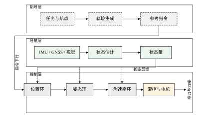
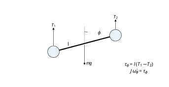
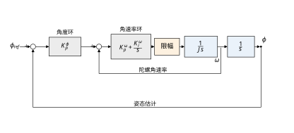
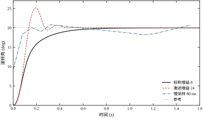
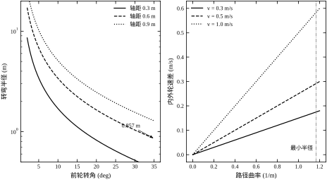
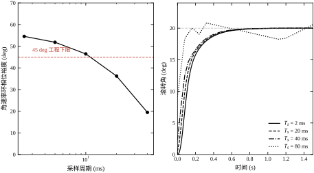
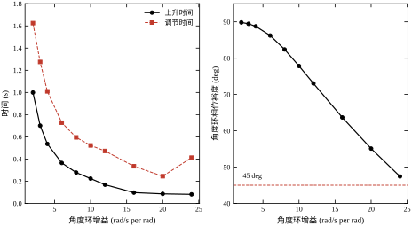
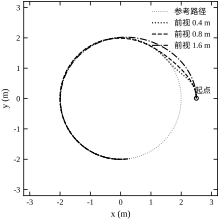
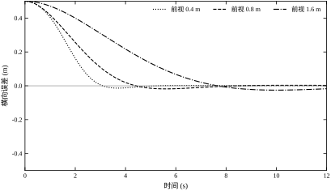
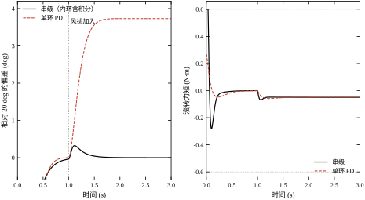

同样是一台电机、一个编码器、一个 PID，装在机床进给轴上能做出微米级定位，装在四旋翼上却可能连 20° 的姿态都稳不住。差别不在控制器公式，而在对象：机床是稳定的、单输入单输出的、几乎没有外部扰动的；四旋翼是开环不稳定的、欠驱动的、时刻被风和气流推着的。运动控制这一部分（第 94–103 章）讨论的就是这类“会动、会晃、会跑偏”的对象，本章聚焦其中最典型的两类平台：多旋翼飞行器与轮式移动机器人。
某电力巡检班组用四旋翼在铁塔旁悬停拍照。飞手松开摇杆，机体在 3 s 内偏移了 1.2 m，画面糊成一片。事后查日志：姿态角一直在 ±4° 之间摆动，角速率环的输出已经顶到限幅。问题不是“姿态环增益不够大”——把角度环增益从 8 调到 24，仿真里上升时间从 0.278 s 缩到 0.081 s，但超调从 0 跳到 25.7%，实机上抖动更厉害，因为力矩预算已经被 20° 的阶跃吃光了。
另一个现场是仓储 AGV 沿货架通道直线行驶。路径是直的，车却像喝醉一样左右画龙，横向误差峰峰值 0.16 m，刚好刮到货架立柱。工程师把循迹增益加大，画龙频率变高；把增益减小，过弯时又切内道。最后发现是前视距离选错了：0.4 m 时转向角速度峰值 1.269 rad/s，控制器在每个控制周期都在“纠偏—过冲—再纠偏”；换到 0.8 m，转向角速度峰值降到 0.333 rad/s，横向误差 RMS 从 0.020 m 变到 0.047 m，但峰值误差反而更平稳。
这两个片段说明：无人机与移动机器人的控制问题，核心不在“用哪个控制器”，而在把任务拆成哪几层、每层用什么信号、每层的时间尺度差多少。层级拆错，参数怎么调都是在错误的维度上做功。
两类平台共用同一套三层结构，如图 100-1。最上层是制导层，把任务（航点、航线、货架坐标）变成随时间变化的参考：位置、速度、航向。中间是导航层，把 IMU、GNSS、视觉、轮速里程计融合成可信的状态估计。最下层是控制层，把状态误差变成电机指令。
三层的时间尺度依次递减：制导层 1–10 Hz，导航层 50–200 Hz，控制层 200–1000 Hz。这个比例不是随意定的，它由“内环必须比外环快 4–10 倍”这条串级设计准则决定（推导见 §100.6）。把三者混在一起写成一个 500 Hz 的大控制器，是初学者最常见的结构错误。
时间尺度分离还有一个常被忽视的好处：它把延迟的影响限制在单层之内。导航层的融合延迟如果是 5 ms，它只影响控制层看到的测量，不会直接传到制导层；反过来，制导层 0.5 s 的规划周期也不会让控制层变慢。如果三层合并成一个循环，最慢的那一环（通常是视觉或规划）就会把整个循环的周期拖到它的量级，控制层随之失去带宽。这就是为什么“把视觉结果直接喂给电机”的方案在实机上几乎总是抖的——不是算法错，是时间尺度被拉平了。

多旋翼是欠驱动系统：四个电机只能产生沿机体 z 轴的合推力与三个力矩，水平方向的运动必须靠倾斜机体间接获得。因此位置环不能直接输出力，只能输出“期望姿态”，再由姿态环去跟踪。姿态环内部又分两层：外层的角度环把角度误差变成角速率指令，内层的角速率环把角速率误差变成力矩。三层串起来就是图 100-3 的结构。
这样拆的好处是每一层只面对一个简单的对象：角速率环面对的是“力矩—角速率”的一阶积分关系，角度环面对的是“角速率—角度”的积分关系，位置环面对的是“姿态—加速度”的近似比例关系。每一层都可以用最基础的单回路方法设计，层与层之间通过带宽分离解耦。
代价是带宽逐层衰减：角速率环 40 rad/s，角度环只能取到 8 rad/s，位置环再降到 2 rad/s。位置环的响应因此天然是“慢”的，这也是为什么无人机的定点悬停看起来总是慢悠悠地飘过去，而不是像伺服轴那样一步到位。
欠驱动带来的限制可以用一个式子看清。悬停附近，水平加速度与倾角的关系是 a_x=g\tan\phi\approx g\phi。也就是说，1° 的倾角只换来 0.171 m/s² 的加速度，想要 4 m/s²（约 0.4 g）就得倾 22°。这个换算决定了位置环的动态上限：位置环的每个增益最终都要折算成倾角指令，而倾角指令受姿态环带宽与推力余量双重限制。姿态环快不起来，位置环就不可能快；反过来，位置环要求过高的加速度，姿态环就会被逼到饱和。三层串级不是“为了好看”，而是把“加速度需求”与“姿态能力”这两件事显式分开，让每一层各自面对自己能处理的约束。
轮式底盘的限制不在推力，而在运动学约束。普通轮子不能侧向滑动，所以差速底盘在任意时刻只能沿车体纵轴方向前进，转弯必须靠左右轮速差；阿克曼底盘进一步把左右轮的转角耦合起来，转弯半径由轴距与前轮转角决定。这类约束是“非完整”的：车辆能到达平面上任意位置和朝向，但不能沿任意方向瞬时移动。
这个约束直接决定了路径跟踪的难点：控制器不能直接消除横向误差，只能通过“朝某个方向开”间接地把误差压下去。前视距离、车速、转向限幅三者的关系，决定了闭环是收敛、画龙还是切内道。§100.4 与 §100.9 会给出定量结果。
三类常见底盘的约束强度差别很大，设计时要先分清：
把全向底盘也套上纯跟踪，是常见的过度设计：明明可以横移纠偏，却非要绕一个弧线过去，既慢又浪费轮速余量。先确认底盘的可控方向维数，再选跟踪律，这一步比调参重要。
初学者常问：既然最终都要输出电机指令，为什么不把位置误差直接送进一个 PID，跳过姿态环？答案在 §100.4 的对比数据里。对同一个滚转轴，用单环 PD 直接控姿态、外部加 0.05 N·m 常值力矩扰动：
同一个对象、同一套传感器、同一个扰动，偏差差 11 倍，力矩抖动差 14 倍。原因不是串级“算得更准”，而是单环把两件互相冲突的事压在一个自由度上：要抗扰就得有积分，要快速跟踪就得不加积分；要抑制噪声就得降低微分增益，要阻尼就得提高微分增益。串级把“抗扰”交给内环积分、“跟踪”交给外环比例、“滤波”交给内环测量，三件事各占一个通道。
这也解释了为什么工业伺服驱动器几乎都是“电流环—速度环—位置环”三层：不是历史包袱，而是三件事真的需要三个通道。
符号上，本章统一用 \phi、\dot\phi=\omega、\tau 表示滚转角、角速率与力矩；J 为转动惯量，l 为力臂，\tau_m 为执行器时间常数，T_s 为控制周期；底盘的 L、b、v、\delta、L_d 分别为轴距、轮距、车速、前轮转角与前视距离。带下标的 K_p、K_i、K_d 用上标区分回路：\omega 表示角速率环，\phi 表示角度环，p 表示位置环。这套记号在 §100.2 建立后不再改变，后续各章沿用。
把三层结构放进一段真实任务，能看清“哪一层在什么时候是主角”。以起飞到降落为例：
同一套结构，各层在不同阶段的分工完全不同。调参时若不分阶段，很容易在悬停工况下调出一条在航线工况下发散的参数——因为两个阶段激励的层不一样。先明确要优化哪一段，再决定调哪一层，这条纪律比任何整定口诀都实用。
误解一：增益越大响应越快。 只在力矩不饱和的小信号区成立。饱和区的响应由限幅值和惯量决定，加大增益只改变进入与退出饱和的时刻，不改变加速斜率（§100.4.2 的表：限幅从 0.3 到 0.6 N·m，上升时间只改善 3%）。更麻烦的是，加大增益同时降低裕度，等到“看起来更快”时，系统往往已经贴着稳定边界了。
误解二：每一层都加积分会更准。 积分的职责是消除常值误差，但串级里同一个误差已经被内环积分消过一次。外环再加积分，等于把 90° 的相位滞后叠两次，大阶跃时还会卷绕。本章的结构是“内环有积分、外环只有比例”，理由在 §100.2.4；要给位置环消静差，正确工具是速度前馈或扰动观测器，不是积分（§100.11.7 案例一）。
误解三：采样率越高越好。 采样率只解决零阶保持这一项相位代价，解决不了计算与传输延迟。400 Hz 采样配 10 ms 延迟，与 200 Hz 采样配 2 ms 延迟相比，后者的相位更宽裕——因为按式 (100-28)，延迟的代价是 \omega_cT_d，与采样率无关。选采样率之前先量延迟，否则提高的采样率会被延迟吃回去。
三个误解的共同点是把“局部结论”当成了“全局规律”：增益、积分、采样率在各自的单回路里都对，放进串级与饱和工况就都变了条件。本章后面的每一节，本质上都在补这些条件。
§100.2 建立四旋翼滚转轴与平面底盘的数学模型，并给出串级回路的频域描述；§100.3 把它固化成八步设计流程；§100.4 在连续域完成姿态与位置的参数设计；§100.5 讨论采样、量化与延迟带来的离散效应；§100.6 用裕度与指标说明稳定性边界；§100.7、§100.8 讲每个参数的作用方向与现场调参顺序；§100.9 给出前馈、增益调度、预测型跟踪等改进；§100.10 落到姿态估计噪声、执行器饱和、户外风扰的工程处理；§100.11 说明适用边界；§100.12 给出可复现代码。
如果只能记住一句话：先按时间尺度把问题分层，再在每层内部做单回路设计；层间的带宽比决定了系统的鲁棒性，而不是某一层的增益大小。
本节只建两个模型：多旋翼的滚转轴（其余两个姿态轴结构相同）与平面底盘的自行车模型。选择滚转轴而不是完整的六自由度模型，是因为串级设计的全部要点——带宽分离、内环近似、外环裕度——在单轴上就能讲清楚；完整模型的耦合（§100.4.4）只影响参数取值，不改变结构。
定义世界坐标系 O_w（东北天）与机体坐标系 O_b（前右下）。姿态用欧拉角 \phi,\theta,\psi 描述，分别为滚转、俯仰、偏航。四个电机对称布置，力臂为 l，左、右两侧的合推力分别为 T_1、T_2，则绕机体前向轴的力矩为
\tau_\phi = l\,(T_1-T_2) \tag{100-1}
在悬停附近（\phi,\theta 小于 20°）且偏航角速率不大时，三个姿态轴的惯性耦合项可以忽略，滚转轴近似为独立的单输入单输出系统。这个近似是全部串级设计的前提，超出小角度范围后必须回到完整模型，或改用基于四元数的姿态控制。
式 (100-1) 里的 l 不只是几何量，它还决定了力矩与总推力的兑换关系。悬停时两侧各出 T_0，要产生力矩 \tau 就得让一侧加、另一侧减，增量 \Delta T=\tau/l。取 \tau=0.6 N·m、l=0.15 m，得 \Delta T=4 N。若整机重 1.2 kg，悬停时每侧合推力约 6 N，这 4 N 的增量已经占到 67%——也就是说，0.6 N·m 的力矩预算在悬停点上就接近用光，做大机动时必然有一侧电机先到转速上限。力矩限幅不是控制器的参数，是动力系统的物理上限，这一点在 §100.4 的限幅扫描里会反复出现。
刚体绕机体轴的转动方程为 J\ddot{\phi}=\tau_\phi。电机与桨叶不能瞬时产生力矩：电调响应、桨叶惯性与气动建立时间合起来可用一阶滞后近似，于是从力矩指令到滚转角的传递函数为
\frac{\phi(s)}{\tau(s)}=\frac{1}{Js^2(\tau_m s+1)} \tag{100-2}
本书取 J=0.012\ \mathrm{kg\cdot m^2}、l=0.15\ \mathrm{m}、\tau_m=0.010\ \mathrm{s}。这三个数决定了一切：J 越大，同样力矩下的角加速度越小；l 越大，同样的推力差产生的力矩越大；\tau_m 越大，内环可用的带宽越低。图 100-2 给出受力与力矩的几何关系。

注意式 (100-2) 与常见的“双积分”模型差一个一阶环节。很多教材直接写 1/(Js^2)，在 10 rad/s 以下看不出差别，但在 40 rad/s 的穿越频率上，\tau_m=10 ms 会额外贡献
\Delta\varphi = -\arctan(\omega_c\tau_m)=-\arctan(0.4)=-21.8^\circ \tag{100-3}
的相位滞后。这 21.8° 是把角速率环带宽定在 40 rad/s 而不是更高的直接原因。
被忽略的耦合项有两个，量级不同，处理方式也不同。第一个是陀螺力矩：机体绕两个轴同时转动时，第三个轴会出现 -(J_z-J_y)\dot\theta\dot\psi 形式的耦合力矩。悬停与小角速率下它只有毫牛米量级，可以忽略；但偏航角速率到 2 rad/s、俯仰同时有 1 rad/s 时，耦合项可达 0.01\times2=0.02 N·m，占限幅的 3%，已经能和积分器的输出相比。第二个是推力投影：倾斜后总推力在垂直方向的分量按 \cos\phi\cos\theta 衰减，这是高度通道与姿态通道的耦合，不是力矩耦合，但它会让“姿态一动、高度就掉”（§100.2.5）。
两个耦合项对应两条处理路线：前者靠解耦前馈（把 -(J_z-J_y)\dot\theta\dot\psi 算出来直接加到力矩指令上）或 MPC，后者靠高度环的 \cos 补偿前馈。本章的仿真两者都没建，因为在小角度、低角速率的工况下它们合起来不到 5% 的影响；但读者若要做大机动或载人平台，这两项必须补上，否则调好的参数一到高速段就失稳。
角速率环的对象是“力矩—角速率”，即式 (100-2) 去掉一个积分。取带积分的 PI 控制器
C_\omega(s)=K_p^\omega+\frac{K_i^\omega}{s}=K_p^\omega\frac{s+z}{s}, \qquad z=\frac{K_i^\omega}{K_p^\omega} \tag{100-4}
开环为
L_\omega(s)=C_\omega(s)\cdot\frac{1}{Js(\tau_m s+1)} =\frac{K_p^\omega(s+z)}{J\,s^2(\tau_m s+1)} \tag{100-5}
在穿越频率 \omega_c\gg z、\omega_c\tau_m<1 的常用区间内，|L_\omega(\mathrm{j}\omega_c)|\approx1 给出 K_p^\omega\approx J\omega_c，而相位为
\angle L_\omega(\mathrm{j}\omega_c)=\arctan\frac{\omega_c}{z}-180^\circ-\arctan(\omega_c\tau_m) \tag{100-6}
于是相位裕度
\mathrm{PM}_\omega=\arctan\frac{\omega_c}{z}-\arctan(\omega_c\tau_m) \tag{100-7}
取 \omega_c=40 rad/s、z=8 rad/s，得 \mathrm{PM}_\omega=78.7^\circ-21.8^\circ=56.9^\circ，与数值计算的 57.27° 相差 0.4°，误差来自穿越点的插值与 |L|=1 的近似。对应的增益为 K_p^\omega=0.48、K_i^\omega=3.84。
这里有一个容易被忽略的取舍：z 取得越小（积分越弱），\arctan(\omega_c/z) 越接近 90°，相位裕度越高，但低频积分作用越弱，抗常值扰动的收敛越慢；z 取得越大，积分越强，裕度越低。本书取 z=\omega_c/5，是在“抗扰不慢、裕度不低于 55°”之间的折中。§100.7 给出这组参数下裕度与指标的实测对应。
闭合后的角速率环记为
T_\omega(s)=\frac{L_\omega(s)}{1+L_\omega(s)} \tag{100-8}
它在低频近似为 1，带宽约等于 \omega_c。角度环设计时，把 T_\omega 当作一个“带宽 40 rad/s 的一阶环节”来用，这是串级设计中最关键的一步近似。
角度环只需要比例控制：
L_\phi(s)=\frac{K_p^\phi}{s}\,T_\omega(s) \tag{100-9}
当 K_p^\phi\ll\omega_c 时，外环穿越频率约为 K_p^\phi，相位裕度近似为
\mathrm{PM}_\phi\approx 90^\circ+\angle T_\omega(\mathrm{j}K_p^\phi) \tag{100-10}
取 K_p^\phi=8 rad/s。在 \omega=8 rad/s 处，内环开环 L_\omega 的幅值为 7.05、相位为 -139.6^\circ，于是
T_\omega(\mathrm{j}8)=\frac{7.05\angle-139.6^\circ}{1+7.05\angle-139.6^\circ} =1.12\angle-5.9^\circ \tag{100-11}
即内环在 8 rad/s 处只贡献 5.9° 的相位滞后，外环裕度应在 84° 左右，数值计算为 82.4°，差别来自穿越点略高于 8 rad/s。这个结果说明：只要内外环带宽比不小于 4，内环对外环的影响就只是“一点相位”，外环可以按单回路设计。
外环为什么只用比例、不加积分？因为姿态角的稳态误差在内环已经消掉了：积分作用在角速率环里，只要内环还闭合，任何常值力矩扰动都会被内环的积分压成零角速率误差，而角速率误差为零就意味着角度不再漂。外环再加积分，等于把同一个自由度积分两次，后果是相位再掉 90°、大阶跃时卷绕，而稳态精度并不会因此提高。这条结论有明确前提：内环必须始终闭合且没有饱和。一旦内环失效（传感器故障、进入手动），外环的积分缺失就会表现为姿态缓慢漂移，这也是故障切换时要单独处理的原因。
完整的姿态串级结构如图 100-3。图中内环反馈取自陀螺（直接测角速率），外环反馈取自姿态估计（角度），两者不是同一个信号——这一点在 §100.10 讨论噪声时非常关键。

多旋翼的水平加速度由倾角产生。在小角度下，沿世界系 x 方向的加速度与滚转角近似成正比：
a_x=g\tan\phi\approx g\phi \tag{100-12}
因此位置环的输出不是力，而是期望姿态：
\phi_d=\arcsin\!\left(\frac{a_{des}}{g}\right) \tag{100-13}
位置环本身用 PD：
a_{des}=K_p^p\,(p_{ref}-p)-K_d^p\,v \tag{100-14}
若姿态环理想（\phi=\phi_d），忽略式 (100-12) 的非线性，位置闭环为
\ddot{p}+K_d^p\dot{p}+K_p^p p=K_p^p p_{ref} \tag{100-15}
即自然频率 \omega_n=\sqrt{K_p^p}、阻尼比 \zeta=K_d^p/(2\sqrt{K_p^p})。取 K_p^p=4、K_d^p=4，得 \omega_n=2 rad/s、\zeta=1，临界阻尼。对 \zeta=1 的二阶系统，10%→90% 上升时间约为 3.36/\omega_n，即 1.68 s，与仿真值 1.676 s 吻合。
位置环的慢是结构决定的，不是参数没调好：它必须比姿态环慢 4 倍以上，否则会把姿态环的相位滞后当成自己的对象特性，形成振荡。§100.4.5 给出姿态滞后对位置指标的定量影响。
式 (100-12) 还藏着一个高度通道的耦合。倾角为 \phi 时，垂直方向的推力分量从 T 降为 T\cos\phi，要维持高度就得把总推力提到 T=mg/\cos\phi。1 m 阶跃对应 24.06° 倾角，1/\cos24.06^\circ=1.095，即需要多出 9.5% 的推力；倾到 45° 时这个系数涨到 1.414。横向机动越猛，高度越容易掉，这不是高度环调得不好，而是推力被倾斜“借走”了。工程上的处理有两种：一是给高度环加前馈 mg/\cos\phi；二是在姿态指令上做倾角限幅，把最大倾角控制在推力余量之内（§100.9.2）。本章的仿真没有建高度通道，但读者在上真机时会立刻遇到这个现象。
轮式底盘在平面上的运动用自行车模型描述。状态为 (x,y,\psi)，控制为线速度 v 与前轮转角 \delta：
\dot{x}=v\cos\psi,\qquad \dot{y}=v\sin\psi,\qquad \dot{\psi}=\frac{v\tan\delta}{L} \tag{100-16}
其中 L 为轴距。差速底盘没有前轮转角，但左右轮速差等效地产生偏航角速率 \omega=v/R，与式 (100-16) 在运动学上等价，只需把 \tan\delta/L 换成 1/R。瞬时转弯半径与轮速差为
R=\frac{L}{\tan\delta},\qquad \Delta v=\frac{v\,b}{R} \tag{100-17}
其中 b 为轮距。式 (100-17) 是底盘选型的依据：轴距 0.6 m、转角 35° 时最小半径 0.857 m；同样转角下轴距 0.9 m 的车只能做到 1.285 m，过不了 1 m 宽的通道。
差速底盘把式 (100-17) 进一步拆到左右轮：v_L=v-\omega b/2、v_R=v+\omega b/2，其中 \omega=v/R。代 v=0.5 m/s、b=0.5 m、R=2 m，得 \omega=0.25 rad/s、v_L=0.4375 m/s、v_R=0.5625 m/s，轮速差 0.125 m/s——这正是表 100-5 在 16.7° 附近的那一行。轮速差是差速底盘唯一的转向手段，所以轮速环的精度直接决定航向精度；编码器分辨率不够时，直线行驶会以“一顿一顿”的方式跑偏。
路径跟踪采用纯跟踪（Pure Pursuit）。在路径上取距车体前视距离 L_d 的一点，车体到该点的连线与车头方向的夹角为 \alpha，则期望转角
\delta=\arctan\!\left(\frac{2L\sin\alpha}{L_d}\right) \tag{100-18}
对直线路径做小角度线性化，设横向误差为 e，可推出
\ddot{e}+\frac{2v}{L_d}\dot{e}+\frac{2v^2}{L_d^2}e=0 \tag{100-19}
推导只有三步：横向误差的变化率 \dot e=v\sin\psi_e\approx v\psi_e；航向误差的变化率 \dot\psi_e=v\kappa_{\mathrm{ref}}-v\tan\delta/L，直线路径下 \kappa_{\mathrm{ref}}=0；纯跟踪给出的转角在小角度下近似 \delta\approx2L\alpha/L_d，而前视夹角 \alpha\approx-(e+L_d\psi_e)/L_d。三式合并消去 \delta 与 \psi_e，即得式 (100-19)。
这是一个阻尼比恒为 1/\sqrt{2}、自然频率为 \sqrt{2}v/L_d 的二阶系统。两条结论直接可用：第一，前视距离只改变收敛速度，不改变阻尼比，所以“画龙”不是前视距离单独造成的，而是离散化、转向限幅与曲率突变共同作用的结果；第二，L_d 越大收敛越慢，v=0.5 m/s、L_d=0.8 m 时 \omega_n=0.884 rad/s，按 4/(\zeta\omega_n) 估计调节时间约 6.4 s，与图 100-9 的衰减过程一致。
式 (100-19) 是在直线路径上推的。圆轨迹上还多一项由曲率引起的稳态偏置，实测该偏置随 L_d 近似按平方增长（0.4 m 时 0.0039 m，0.8 m 时 0.0125 m，1.6 m 时 0.0473 m），这就是“前视越大越切内道（或外道）”的定量来源。
上述三个模型都不是无条件成立的。表 100-1 列出各自的假设与越界后的表现，后续每一节的设计结论都只在表内条件下有效。
| 模型 | 核心假设 | 越界后的典型表现 | 处理章节 |
|---|---|---|---|
| 滚转轴 1/(Js^2(\tau_ms+1)) | 小角度、三轴解耦、力矩线性 | 大机动时耦合发散、桨叶失速 | §100.4.4 |
| 姿态串级 L_\phi=K_p^\phi T_\omega/s | 内外环带宽比 ≥ 4、测量无延迟 | 外环振荡、超调骤增 | §100.6、§100.10 |
| 位置 PD + 姿态映射 | 小倾角、姿态环远快于位置环 | 大加速度时高度掉高、倾角饱和 | §100.9、§100.10 |
| 自行车模型 | 纯滚动无侧滑、转向几何理想 | 打滑、低速大转角时误差大 | §100.11 |
| 纯跟踪线性化 | 直线、小航向误差、连续曲率 | 折线路径切角、曲率突变处超调 | §100.8 |
表 100-1 的第四、五行值得单独强调：轮式底盘的实际轨迹误差，很大一部分不是控制器造成的，而是轮胎侧滑与地面摩擦变化造成的。这类误差靠调增益压不下去，只能靠降低车速或增加里程计/视觉校正。
公式容易让人觉得设计是“算出来的”，实际上是“一级一级传下去”的。以 1 m 位置阶跃的第 0 个控制周期为例，逐级追一遍，只需四个乘法：
第四步得到一个远超 0.6 N·m 限幅的力矩——这就是为什么 20° 以上的阶跃必然饱和，也是为什么大信号响应的形状由限幅值决定而不由增益决定。同时它也说明饱和不是“控制器太激进”：要让 1 m 阶跃严格按线性二阶响应走，第 0 拍就需要 1.6 N·m，而动力系统只给得出 0.6 N·m，差的那部分只能靠时间换。
如果不想饱和，有两条路：降 K_p^p（把 1 m 阶跃的加速度需求压到 0.6g 以下，即 a\le5.9 m/s²，对应倾角 31°，仍超 30° 上限），或改用 S 型参考把阶跃拆成斜坡，让加速度需求分散到几百毫秒里。后者是轨迹规划的事，不是控制器的事——控制器只能决定“要多少”，能不能给得出由对象决定。这条区分能省掉大量无效调参。
式 (100-5) 的开环只靠一张 Bode 图就能验完，读法固定为三步：
第一，看低频斜率。L_\omega 在极低频是 -40 dB/dec，因为分母有两个积分（刚体一个、PI 一个）；越过零点 z=8 rad/s 后变成 -20 dB/dec，这一段就是积分起作用的频段；越过 1/\tau_m=100 rad/s 后再变成 -40 dB/dec。三段斜率的分界点就是两个参数：第一个拐点给出 z，第二个拐点给出 \tau_m。现场量一张频响曲线，这两个数可以直接读出来，比拆机测参数快。
第二，看 |L|=1 的位置，读出 \omega_c。本章是 38.2 rad/s，略低于设计的 40，差值来自积分项在穿越点的贡献。读数与设计值差 5% 以内都正常，不必回头改参数。
第三，看相位在 \omega_c 处离 -180^\circ 还有多远，就是 PM。这里有一个容易被误读的地方：这条回路的相位在高频渐近于 -180^\circ 但永远不下穿，所以增益裕度算出来是 \infty。初学者看到“GM 无穷大”就以为“绝对稳定”，其实只说明“单纯加增益不会失稳”——延迟与未建模动态会让相位继续往下走，那时 GM 立刻变成有限值。GM 为无穷的回路，最该防的是延迟，这与 §100.5 的结论一致。
三步读完，一张图给出了 z、\tau_m、\omega_c、PM 四个量，而设计时输入的正是前三个。这就是频域设计的闭环：算出来、画出来、读回来，三者一致才算设计完成。
把 §100.2 的公式整理成可执行的八步。顺序不能颠倒：每一步的输出是下一步的输入，跳过任何一步都会在后面的调参里以“怎么调都不对”的形式还回来。
先写清楚三件事：平台的最大速度与加速度、任务要求的定位/跟踪精度、允许的调节时间。三者共同决定最外层的带宽。例如航拍悬停要求 1 m 内稳定、3 s 内到位，位置环带宽 2 rad/s 就够；而穿越机穿门要求 0.2 m 内、0.3 s 响应，位置环带宽要提高到 8–10 rad/s。
这一步最常见的错误是只写“要稳、要快”，不写数值。没有数值就无法判断后面的带宽分配是否合理。
有了数值就能反推带宽。对阻尼比 0.7 左右的二阶系统，上升时间与调节时间的经验关系是 t_r\approx2.2/\omega_n、t_s\approx4/(\zeta\omega_n)。要求 0.3 s 内到位、允许 5% 超调（\zeta\approx0.7），则 \omega_n\ge4/(0.7\times0.3)=19 rad/s，再按 4 倍带宽比往上推，姿态环要 76 rad/s——这个数已经超过 \tau_m=10 ms 能支撑的上限，说明任务指标与硬件不匹配，要么放宽时间，要么换执行器。设计流程的第一步不是算增益，而是尽早发现这种不匹配。
还要区分“到位”与“稳定”。拍摄任务要求的是“画面不抖”，即角速率残差小，而不是位置误差小；巡检任务要求的是“能停在目标点上方”，位置误差优先。两类指标的带宽分配不同：前者可以把角速率环做快、位置环做慢，后者相反。先写清验收量，再谈带宽。
按内环比外环快 4–10 倍分配：
| 回路 | 带宽 | 依据 |
|---|---|---|
| 角速率环 | 40 rad/s | 受 \tau_m 与采样率限制的上限 |
| 角度环 | 8 rad/s | 内环的 1/5 |
| 位置环 | 2 rad/s | 角度环的 1/4 |
小于 4 倍，内环相位滞后会吃掉外环裕度（§100.6 有实测：带宽比 K_p^\phi=24、即比值 1.67 时，外环超调从 0 升到 25.71%）；大于 10 倍，内环带宽会被噪声和采样率顶死，实机上做不出来。本书统一取 5 倍与 4 倍。
上限 10 倍不是经验教条，而是有两条硬约束：
两条约束取小，就是内环带宽的真实上限。外环带宽不是“想取多少取多少”，而是被这个上限除以 4–10 之后剩下的数。这也是为什么慢速处理器上的串级结构看起来“层层都慢”：不是调参保守，是硬件决定的。
角速率环的比例增益由穿越频率反推：
K_p^\omega=J\,\omega_c \tag{100-20}
代入 J=0.012、\omega_c=40，得 K_p^\omega=0.48\ \mathrm{N\cdot m/(rad/s)}。这里必须同时核对力矩预算：20° 阶跃的初始速度指令为 K_p^\phi\cdot20^\circ=2.79 rad/s，对应力矩 0.48\times2.79=1.34\ \mathrm{N\cdot m}，已经超过 0.6 N·m 的限幅。这不是设计错误，而是说明大阶跃必然进入饱和区，后面的指标要在饱和条件下验收。
同样的算式换成 5° 小阶跃，初始力矩需求是 0.48\times8\times0.0873=0.335 N·m，只有限幅值的 56%——这是线性的。同一套参数在 5° 与 20° 下处于两个完全不同的工作区，这也是 §100.7 的增益扫描必须用小阶跃的原因。设计时要把两个工作区分开记录：
两者之间没有明显的分界，是一个渐变过程。工程上常用“力矩峰值达到限幅的 80%”作为小信号区的上界，本章的 5° 阶跃正好落在这条线以下。
取 z=\omega_c/5=8 rad/s，得 K_i^\omega=K_p^\omega z=3.84。用式 (100-7) 校核：
\mathrm{PM}_\omega=\arctan\frac{40}{8}-\arctan(40\times0.01) =78.7^\circ-21.8^\circ=56.9^\circ \tag{100-21}
低于 45° 就减小 \omega_c 或减小 \tau_m（换电调、换桨），不要靠加大积分去“补响应”——那只会把裕度进一步压低。
零点还有一个工程含义：它决定了扰动恢复的快慢。常值力矩扰动加入后，积分要把误差重新压回零，这个过程的时间常数约为 1/z。z=8 rad/s 对应 0.125 s，实测恢复时间约 0.4 s（三倍时间常数），与 §100.4 的扰动曲线一致。若把 z 降到 2 rad/s，恢复时间变成 1.5 s，抗风性能明显变差；若升到 20 rad/s，恢复快了，但按式 (100-7) 算 PM 只剩 \arctan2-21.8^\circ=41.6^\circ，已经跌破 45° 门限。零点位置是“抗扰速度”与“裕度”的直接兑换率，没有免费的选项。
按带宽比 5 取 K_p^\phi=8 rad/s。用式 (100-10) 估算 \mathrm{PM}_\phi\approx 84^\circ，数值计算 82.4°，均可接受。若实测裕度低于 60°，说明内环带宽不足，应回到第二步重新分配，而不是继续减小外环增益——减小外环增益会让位置环更慢，形成恶性循环。
由期望的自然频率与阻尼比反解
K_p^p=\omega_n^2,\qquad K_d^p=2\zeta\omega_n \tag{100-22}
取 \omega_n=2、\zeta=1，得 K_p^p=4、K_d^p=4。若要更快的响应，先确认姿态环能否跟上：位置环带宽超过角度环的 1/4，姿态滞后就会表现为位置超调（§100.4.5 实测峰值倾角从 24.06° 降到 15.13°）。
位置环增益还有一条来自倾角的上限。阶跃瞬间的加速度需求是 K_p^p e_0，折算倾角为 \arcsin(K_p^p e_0/g)，必须小于允许的最大倾角，即 K_p^p\le g\sin\phi_{\max}/e_0。取 \phi_{\max}=30^\circ、e_0=1 m，得 K_p^p\le4.9。设计值 4 刚好在限制之下，余量只有 18%。这说明本章的位置环不是“带宽可以随便加”的回路：把 K_p^p 提到 9，1 m 阶跃初始就要 66.5° 倾角，物理上做不到，控制器会在饱和与超调之间来回。若任务确实需要更快的到位，正确做法是把大阶跃拆成带速度规划的轨迹（梯形或 S 型），而不是加大增益。
先由通道宽度定最小转弯半径，再由式 (100-17) 反解轴距与最大转角；最后由车速定前视距离。经验范围为
L_d\approx(1\sim2)\,L+\frac{v}{2} \tag{100-23}
轴距 0.6 m、车速 0.5 m/s 时，L_d 落在 0.85–1.45 m 之间。用时间法 L_d=vT_d（T_d 取 1.5–3 s）得到 0.75–1.5 m，两把尺子给出的区间基本重合。§100.8 用实测说明为什么不宜取 0.4 m：虽然稳态误差更小，但转向角速度峰值达到 1.269 rad/s，是 0.8 m 时的 3.8 倍。
前视距离的候选还可以用“通道预算”直接筛掉一批。货架通道宽 W、车宽 b 时，允许的横向误差预算是 (W-b)/2。取 W=1.2 m、b=0.5 m，预算 0.35 m；对照表 100-8 的最大误差列，L_d=1.6 m 的 0.3999 m 与 2.4 m 的 0.4456 m 都超预算，直接排除；L_d=0.4 m 的 0.1621 m 虽在预算内，但转向速率 1.269 rad/s 超过舵机 0.5 rad/s 的能力，也排除。两个约束一夹，只剩 0.8 m 一个候选——这就是几何设计该有的样子：先算边界，再谈调参。
设计完成后必须做三项校核，任何一项不过都要回到对应步骤：
三项校核要留下具体数值，否则等于没做。本章的三个实测值分别是：限幅校核——20° 阶跃的力矩峰值 0.600 N·m，恰好等于限幅，说明“饱和但可控”；采样校核——T_s=2.5 ms 正好等于 1/(10\omega_c)，属于卡在门限上，实测 PM 从连续的 57.27° 降到 54.54°，代价 2.7°；噪声校核——陀螺 0.02 rad/s 加姿态 0.002 rad 的噪声下，姿态抖动 0.0170°、力矩抖动 0.0130 N·m。三项都在可接受范围，但采样这一项没有余量，若控制器要加工作量（比如同时跑视觉），第一件事就是核对周期是否还保得住 2.5 ms。
表 100-2 把八步的输入、公式与验收值列在一起，可直接作为设计记录表使用。
| 步 | 输入 | 公式 | 本例取值 | 验收 |
|---|---|---|---|---|
| 1 | 精度、速度、时间 | — | 1 m / 0.5 m·s⁻¹ / 3 s | 指标可量化 |
| 2 | 执行器与采样 | 带宽比 4–10 | 40 / 8 / 2 rad/s | 比例合规 |
| 3 | J、\omega_c | K_p^\omega=J\omega_c | 0.48 | 力矩预算够 |
| 4 | \omega_c | z=\omega_c/5，式 (100-7) | K_i^\omega=3.84 | PM ≥ 45° |
| 5 | 内环带宽 | K_p^\phi=\omega_c/5 | 8 | PM ≥ 60° |
| 6 | \omega_n,\zeta | 式 (100-22) | 4 / 4 | 上升 1.68 s |
| 7 | 通道、车速 | 式 (100-17)(100-23) | L_d=0.8 m | 转向速率可接受 |
| 8 | 实测数据 | — | — | 三项全过 |
需要提醒的是：这张表里的数值只对本书的示例平台成立。换一台机体，J、l、\tau_m 全变，第 3–5 步的结果必须重算。把本书的数字直接抄到另一台飞机上，是新手炸机最常见的原因。
八步流程很少一遍走通，记录返工比记录结果更有价值。下面是一次典型的第二轮迭代：
第一轮按 \omega_c=40 rad/s 设计，得到表 100-2 的那套参数，频域预测 PM 57.3°。台架实测只有 48°，比预测低 9°。补测延迟发现 IMU 输出到控制中断之间还有 4 ms 没算进去——按式 (100-28)，\omega_c=40 时这 4 ms 值 9.2°，与差值吻合。这不是参数错，是模型漏项，所以修的是预算表，不是增益。
第二轮把 \omega_c 降到 30 rad/s，按式 (100-36) 重算：K_p^\omega=0.36、K_i^\omega=2.16、K_p^\phi=6、K_p^p=2.25、K_d^p=3.0。台架 PM 回到 58°，落在 45°–65° 的目标带内。
代价出现在位置环：\omega_n 从 2 降到 1.5 rad/s，10%→90% 上升时间从 3.36/2=1.68 s 拉到 3.36/1.5=2.24 s。任务要求 3 s 内到位，仍满足，但要重新核对“调节时间”而不是“上升时间”——后者只是过程量，验收看的是前者。
这份记录里真正有用的三条是：实测与预测差 9° 时先查延迟而不是先降增益；降带宽要整族重算而不是只改一个；指标退化后要回到第一步的验收量重新确认，而不是凭感觉“差不多”。返工不可怕，怕的是返工后没有留下“为什么改”，下一轮又从头试起。
“要稳、要快、要准”不是指标，但很多任务书就是这么写的。把它变成数字有三条路，按可靠性排序：
第一，从物理量倒推。拍摄要求“画面不糊”，对应的是角速率残差而不是位置误差：按镜头视场与曝光时间估算，1/50 s 曝光下允许的像移约为 1 个像素，折算到角速率就是零点几度每秒。巡检要求“能看清表计”，对应的是悬停位置精度与航向精度。先问“最终看什么”，再折算成控制量，这一步做完，指标自然出现。
第二，找同类产品的公开指标。悬停精度、重复定位精度、循迹误差这些量，商用产品的手册里都有量级可查。抄量级是合理的，抄具体数字要谨慎——测试条件不同，数字没有可比性。
第三，做一次边界演示。让验收方看着实时波形说“这样行、那样不行”，把两种波形之间的差别记成数值。这是最费时间但最有效的方法，因为它直接对齐了“感觉”与“数字”。本章表 100-8 的取值方式就是这一条：先给四组前视距离的实测波形，再由“哪条能接受”反推出参数区间。
三条路的共同点是指标必须是可测的闭环量，而不是开环的期望。写“上升时间小于 0.3 s”可以验收，写“响应要快”无法验收。设计流程的第一步之所以反复强调写数值，原因就在这里：没有数值，后面的带宽分配、限幅校核、验收判据全都失去参照。
本节按连续域讨论两项设计：姿态串级的参数是否落在预期指标上，以及底盘几何是否允许任务要求的轨迹。仿真用 400 Hz 采样（2.5 ms），此时采样对相位裕度的影响只有 2.7°（§100.5 有对照），可以当作连续情形看。
20° 滚转阶跃的响应为：超调 0%（低于 0.01%）、上升时间 0.278 s、±2% 调节时间 0.595 s、力矩峰值 0.600 N·m。四个数里最重要的是最后一个：力矩峰值恰好等于限幅值，说明整个上升段都在饱和区。图 100-5 把标称参数、激进参数（K_p^\phi=24）与慢采样（T_s=80 ms）三条曲线画在一起。

标称曲线没有任何超调，原因是相位裕度高达 82.4°，闭环等效为过阻尼。激进曲线在前 0.08 s 内冲到 25.7%，随后用 0.3 s 退回——这正是 §100.1 里“把增益从 8 调到 24”的后果。慢采样曲线在 1.5 s 时还在 ±1° 附近摆动，说明 80 ms 的采样周期已经接近该增益下的稳定边界。
需要区分两种“快”：上升快不等于到位快。激进参数把上升时间压到 0.081 s、调节时间压到 0.413 s，代价是 25.7% 的超调；慢采样把首次穿越压到 0.075 s，调节时间却是 2.72 s。验收看的是调节时间与超调的组合，单看上升时间会被“首次穿越”误导。
标称曲线的两个数还能反过来验证模型。相位裕度 82.4° 对应二阶近似的阻尼比约 0.83，属于过阻尼，这与“超调为 0”一致；上升时间 0.278 s 对应 \omega_n\approx2.2/0.278=7.9 rad/s，与设计的 K_p^\phi=8 rad/s 相差 1%。一个阶跃响应的上升时间，直接读出了外环带宽——这是现场没有频响仪时最可靠的带宽测量方法：给一个小阶跃，量 10%→90% 的时间，乘 2.2 就是带宽。前提是小阶跃不触限幅，否则读到的是“限幅决定的斜率”，不是带宽。
还有一点容易看漏：这条曲线是饱和工况下的过阻尼响应。力矩在整个上升段顶在 0.6 N·m，闭环实际工作在“恒力矩加速”模式，与线性理论的“指数逼近”形状不同。它看起来平滑，是因为限幅把高频成分滤掉了，不是因为控制器本身阻尼大。
把力矩限幅从 0.3 调到 1.2 N·m，其余参数不动，得到表 100-3。
| 力矩限幅 (N·m) | 上升时间 (s) | 调节时间 (s) | 超调 (%) |
|---|---|---|---|
| 0.30 | 0.287 | 0.620 | 0.00 |
| 0.45 | 0.283 | 0.608 | 0.00 |
| 0.60 | 0.278 | 0.595 | 0.00 |
| 1.20 | 0.246 | 0.552 | 0.00 |
从 0.3 到 0.6，上升时间只改善 3%；从 0.6 到 1.2 才改善 11%。原因是：初始误差 20° 对应的力矩指令是 1.34 N·m，只要限幅低于它，上升段就一直是“满力矩加速”，指标由力矩预算而不是由增益决定。这段区间里继续加增益，除了把控制量顶得更久，没有任何收益。
可以用最短时间估计核对这张表。静止到静止、恒力矩加速再减速，所需时间为 t=2\sqrt{\theta/\alpha}，其中 \alpha=\tau_{\max}/J。\tau_{\max}=0.6 N·m 给出 \alpha=50 rad/s²、t=0.167 s；0.3 N·m 给出 0.236 s；1.2 N·m 给出 0.118 s。理论值全部小于实测的上升时间（0.167 对 0.278、0.236 对 0.287、0.118 对 0.246），比值在 1.7–2.1 之间。差距来自三处：内环不是理想开关（力矩要经过 \tau_m 建立）、10%→90% 只覆盖部分行程、以及调节末段由线性段而非饱和段主导。理论最短时间给下界，实测给可用值，两者都要记录，否则会误以为“再加大限幅就能线性变快”。
这条结论对选型有直接意义：若某机型在 20° 姿态机动上总是“肉”，先算 K_p^\phi\cdot\Delta\phi\cdot K_p^\omega 是否超过力矩上限；超过了就换大桨或减小 J，而不是改 PID。
位置环的基准设计为 K_p^p=4、K_d^p=4，对应 \omega_n=2 rad/s、\zeta=1。表 100-4 对比“姿态瞬时跟随”与“姿态一阶滞后 0.125 s”两种情形。
| 情形 | 上升时间 (s) | 调节时间 (s) | 峰值倾角 (deg) |
|---|---|---|---|
| 理想姿态环 | 1.676 | 2.910 | 24.06 |
| 含姿态滞后 | 1.565 | 3.035 | 15.13 |
两个反直觉的现象。第一，含滞后时上升时间反而更短（1.565 s 对 1.676 s）：姿态跟不上，加速度建立得慢，位置误差在高误差区停留更久，10% 点被推后、90% 点被拉前，两者之差反而缩小。第二，峰值倾角从 24.06° 降到 15.13°：姿态环滞后相当于给位置环加了一个低通，指令的尖峰被削掉了。
调节时间从 2.910 s 增到 3.035 s（+4.3%），这才是滞后真正的代价。工程上判断内环是否够快，看的是调节时间和峰值倾角，不是上升时间；只看上升时间会得出“滞后反而更好”的错误结论。
这份代价可以事先估算。把姿态环近似成一阶环节 1/(s/\omega_c+1)，它在位置环穿越频率 \omega_n=2 rad/s 处贡献 \arctan(2/8)=14^\circ 相位滞后；带宽比取 4 时是 14°，取 2 时是 26.6°，取 10 时只有 5.7°。这就是“带宽比不小于 4”的定量出处：它把内环带来的相位代价压在 15° 以内，留给位置环的裕度还够用。实测滞后比一阶近似更小（内环在低频有增益抬升），所以这个估算偏保守，方向是安全的。
以上都是单轴结果。实际飞行中，滚转与俯仰通过陀螺耦合，偏航会改变推力的分配。三条工程规则来自这个模型：
偏航通道要单独说一句。它的结构同样是“角速率—角度”串级，但执行手段是四个电机的反扭矩差，效率远低于滚转：同样的力矩指令，偏航能拿到的角加速度通常只有滚转的 60%–70%。因此偏航环的带宽一般只取到滚转的 60% 左右（本章若按 40 rad/s 类推，偏航约 24 rad/s）。好在航向误差不直接影响位置——多旋翼的推力方向与航向无关——所以偏航可以更慢，不会拖累位置环。这一点与固定翼不同，后者航向直接决定升力方向。
这些处理不改变 §100.2 的结构，只改变参数的取值与限幅策略，详见 §100.9 的前馈与增益调度。
把式 (100-17) 代进轴距 0.6 m、轮距 0.5 m 的底盘，得到表 100-5。
| 前轮转角 (deg) | 转弯半径 (m) | 内外轮速差 (m/s，v=0.5) | 侧向加速度 (m/s²，v=0.5) |
|---|---|---|---|
| 5 | 6.858 | 0.036 | 0.036 |
| 10 | 3.403 | 0.073 | 0.073 |
| 20 | 1.648 | 0.152 | 0.152 |
| 30 | 1.039 | 0.241 | 0.241 |
| 35 | 0.857 | 0.292 | 0.292 |
这张表回答两个选型问题。第一，通道宽度 1 m 时，35° 的最大转角刚好够用（0.857 m），没有余量；若底盘宽度 0.7 m，实际可用半径只剩 0.15 m 的裕度，必须把车速降到 0.3 m/s 以下。第二，低速时侧向加速度很小（0.292 m/s²），轮胎不会打滑；但车速提到 1.5 m/s 时侧向加速度升到 2.63 m/s²，已接近干燥水泥地的附着极限（\mu\approx0.3），此时运动学模型失效，必须改用考虑侧偏的动力学模型。
图 100-4 把转弯半径与轮速差画成连续曲线，可以直接读出任意转角下的取值。左图的对数纵轴说明：小转角区半径对转角极其敏感（5° 到 10° 半径减半），大转角区反而平缓——这就是为什么 AGV 的转向标定必须在小转角段加密采样点。

把侧向加速度约束 v^2/R\le a_{lat}^{\max} 与式 (100-17) 联立，得到
v\le\sqrt{a_{lat}^{\max}\cdot\frac{L}{\tan\delta}} \tag{100-24}
取 a_{lat}^{\max}=2.0 m/s²（保守值），35° 转角下 v\le1.31 m/s；10° 转角下 v\le2.61 m/s。这条曲线是轨迹规划器的硬约束：规划出的速度剖面若超过它，跟踪再好也会打滑。§100.9 的曲率前馈与速度调度，本质上就是把这条约束嵌进控制器。
这条约束在规划器里的用法很直接：沿路径算出每一点的曲率 \kappa(s)，再按 v(s)\le\sqrt{a_{lat}^{\max}/\kappa} 限速，得到一条“弯道自动减速”的速度剖面。AGV 在直角弯处频繁切内道、甩货，多半不是跟踪器的问题，而是规划器给了恒速剖面——速度没降，曲率又大，控制器只能用大转角硬追，追不上就切内。先查速度剖面，再调跟踪参数，这个顺序能省掉一半的调试时间。
同样是“沿路径走”，三种底盘的代价结构完全不同，选型时按四项比：
| 底盘 | 瞬时可控方向 | 最小转弯半径 | 里程计相对误差（量级） | 承载与效率 |
|---|---|---|---|---|
| 差速（两驱+万向轮） | 前进、自转 | 0（可原地转） | 1%–3% | 高，结构最简单 |
| 阿克曼（前转后驱） | 前进、曲率受限 | L/\tan\delta_{\max} | 0.5%–2% | 最高，适合高速重载 |
| 麦克纳姆 / 全向 | 前进、横移、自转 | 0 | 3%–8% | 低 15%–25%，辊子打滑 |
表格最后一行是全向底盘真正的代价：横移能力是靠辊子斜向滚动换来的，每个辊子都有无效滑动，结果是同样的电机推不出同样的地面速度，且里程计误差比差速大一个量级。所以“能横移”不等于“横移好用”——高精度的全向定位通常还要靠外部基准（反光板、二维码、UWB）而不是轮速。
选型判据可以压成一句：横移动作占任务的比例低于 10% 时，差速底盘更划算。仓储货架间的直线往返、点到点搬运，绝大多数时间在直行，横移只是偶尔用一次，为此付出 20% 的效率和 5 倍的里程计误差并不值得。反过来，机床上下料、狭窄工位对接需要频繁微调横向位置，全向底盘的价值才显现出来。
还有一条容易被忽略的差别在控制器侧：差速与阿克曼必须用式 (100-18) 的几何跟踪律，因为横向误差只能靠转向间接消除；全向底盘可以直接对 x、y、\psi 各做一个位置环，三个方向互不耦合，控制器的设计与调试量都小得多。底盘的可控维数决定了控制器的复杂度，这一点在项目初期比参数整定重要得多。
本章的仿真只做了滚转与水平位置，但真机上最先出问题的往往是高度。原因有三条，都来自“推力只能向上”这个事实。
第一，控制方向不对称。水平方向可以向左也可以向右，推力方向由倾角决定，正负对称；高度方向只能“多推”或“少推”，加速上升靠加推力，加速下降只能靠重力，最快下降加速度被限制在 g 附近（实际还要留余量）。同一个位置环，上升与下降的动态因此不对称，用一组增益往往只能优化其中一个方向。
第二，推力到加速度的增益随姿态变化。垂直加速度是 a_z=(T/m)\cos\phi\cos\theta-g，倾角一大，同样的推力给出的升力就少（§100.2.5 的 1/\cos\phi 修正）。这意味着高度环的有效增益在机动时下降，若不做补偿，表现是“一转弯就掉高”。补偿办法是给高度环的推力指令乘 1/(\cos\phi\cos\theta)，或在混控层统一按姿态修正。
第三，高度测量噪声大而慢。气压计的分辨率对应几十厘米，且受气流影响；超声/激光在室外量程不够；GPS 高度更差。所以高度环的带宽通常只能取到 1 rad/s 以下，比水平位置环还慢一个量级。高度环的瓶颈在传感器，不在控制器，这与水平通道恰好相反。
三条合起来给出一条设计纪律：高度环单独整定、单独验收，不要和水平环共用一套参数。本章的仿真没有建 z 通道，是因为它的结构与水平通道相同、参数却完全不同；读者若要完整实现，按式 (100-22) 取 \omega_n\approx0.8 rad/s、\zeta\approx1，并把推力限幅与姿态修正一起加进去。
无人机与移动机器人的控制器都跑在单片机或实时内核里，没有真正的“连续”。离散化带来三笔额外开销：零阶保持的相位滞后、计算与传输延迟、量化与死区。三笔开销都在内环上叠加，所以内环对采样率最敏感。
三笔的量级差得很远，先记住比例再读下文。T_s=2.5 ms 的零阶保持值 2.9°，同样的 2.5 ms 延迟再值 5.7°，而 12 位 PWM 的量化只值 0.0022°。也就是说，延迟与采样各占预算的一大块，量化几乎可以忽略；真正要标定的电调死区（0.02 N·m）比量化大两个数量级。把精力花在量化精度上、却不去量延迟，是这一节最常见的优化错位。
下面按“采样—延迟—量化与多速率”的顺序展开，正好也是代价从大到小、可处理性从易到难的顺序。
控制器按 T_s 采样、输出在周期内保持不变，等效于给回路串入约 T_s/2 的纯延迟。它在穿越频率处贡献的相位滞后为
\Delta\varphi_{\mathrm{ZOH}}\approx-\frac{\omega_c T_s}{2}\ \text{(rad)} =-\frac{180^\circ\,\omega_c T_s}{2\pi} \tag{100-25}
T_s=2.5 ms、\omega_c=40 rad/s 时，\Delta\varphi=-2.9^\circ；T_s=20 ms 时为 -22.9^\circ。实测的裕度下降分别是 2.73° 与 21.06°，与估算相差不到 0.2°，说明这条近似在 \omega_cT_s\le0.8 内都够用。
这条近似为什么成立，值得看一眼推导。零阶保持在一个周期内的平均延迟是 T_s/2，在 s=j\omega 处的相移是 -\omega T_s/2；只要 \omega T_s\ll1，它与纯延迟的相移完全一致。T_s=20 ms、\omega_c=40 时 \omega_cT_s=0.8，已经不算“远小于 1”，实测的裕度下降反而比估算略小（2.73° 对 2.9°、21.06° 对 22.9°），说明一阶近似偏保守，用它做预算不会低估风险。若采样再慢，这条近似就会失效，必须直接用 \exp(-j\omega T_s) 的精确相移。
控制器的离散化方法也吃相位。本章用 ZOH 离散对象、用 Tustin 离散控制器：前者与真实采样保持一致，后者在低频段把 s 映射得比前向欧拉准，且不会把稳定极点映到单位圆外。若改用前向欧拉，\omega_cT_s 较大时会出现“离散后反而更激进”的假象；若用零极点匹配，则要额外处理零点位置。对象用 ZOH、控制器用 Tustin，是运动控制里最稳的默认组合。
把式 (100-25) 与式 (100-7) 相加，得到离散条件下的内环裕度估计：
\mathrm{PM}_\omega^{d}\approx\arctan\frac{\omega_c}{z}-\arctan(\omega_c\tau_m)-\frac{180^\circ\omega_cT_s}{2\pi} \tag{100-26}
表 100-6 固定控制器参数、只改采样周期，得到裕度与指标的对应。
| 采样周期 (ms) | 速率环 PM (deg) | 超调 (%) | 上升时间 (s) | 调节时间 (s) |
|---|---|---|---|---|
| 2.5 | 54.54 | 0.00 | 0.278 | 0.595 |
| 5.0 | 51.82 | 0.00 | 0.275 | 0.590 |
| 10.0 | 46.44 | 0.00 | 0.283 | 0.590 |
| 20.0 | 36.21 | 0.00 | 0.286 | 0.580 |
| 40.0 | 19.46 | 0.00 | 0.285 | 0.560 |
| 80.0 | 无穿越 | 5.38 | — | 2.720 |
三点值得注意。第一，从 2.5 ms 到 20 ms，超调一直是 0、上升时间几乎不变（0.275–0.286 s），指标对采样率不敏感，只有相位裕度在持续下降。这说明“看阶跃响应验收采样率”是无效的：响应看起来一样好，鲁棒性已经掉了一半。
第二，40 ms 时裕度只剩 19.46°，阶跃响应仍然没有超调（因为 20° 阶跃被力矩限幅压住了，激励不够大），但一遇到扰动就会振荡。第三，80 ms 时 0 dB 穿越点已经落到 Nyquist 频率之外，离散系统判据失效，时域上表现为 5.38% 的超调和 2.72 s 的调节时间，实际已接近失稳。
用 Nyquist 频率可以提前判断这件事。T_s=80 ms 对应 \omega_s=78.5 rad/s、Nyquist 频率 39.3 rad/s，而设计穿越频率是 40 rad/s——穿越点正好压在 Nyquist 上，离散系统在这个频率附近没有可靠的相位信息，裕度自然算不出来。T_s=40 ms 时 Nyquist 是 78.5 rad/s，\omega_c 占 51%，已经进入“相位快速变化”的区域；T_s=2.5 ms 时只占 1.6%，可以放心当连续系统处理。工程上还有一条更保守的经验：\omega_c 不超过 Nyquist 的 20%。按这条算，400 Hz 采样只允许 50 rad/s，与本章的 40 rad/s 刚好相容；而式 (100-27) 的 \omega_c\le\omega_s/10 相当于允许到 Nyquist 的 63%，属于偏激进的口径，只在模型准确、延迟很小时才适用。两条口径的差别，就是“教科书准则”与“现场余量”的差别。
图 100-6 左图给出裕度随采样周期的变化，右图给出四条阶跃曲线。图中 45° 的红色虚线是工程下限，它在 10 ms 附近被穿过，与表 100-6 一致。

由表 100-6 反推，得到本书采用的准则：
T_s\le\frac{1}{10\,\omega_c} \tag{100-27}
\omega_c=40 rad/s 时 T_s\le2.5 ms，即 400 Hz。这条准则等价于“每个闭环时间常数内至少 10 个采样点”。若受算力限制只能做到 5 ms，裕度损失 5.5°，仍在可接受范围；做到 20 ms（50 Hz）时裕度只剩 36.2°，此时应主动把 \omega_c 降到 25 rad/s 以下，而不是硬撑。
采样是“等间隔的滞后”，延迟是“额外的滞后”，两者都吃相位，但延迟不受采样率约束。设总延迟为 T_d（计算一拍 + 总线传输 + 电调响应），则
\Delta\varphi_{d}=-\omega_cT_d \tag{100-28}
T_d=2.5 ms、\omega_c=40 rad/s 时是 -5.7^\circ，与 ZOH 的 2.9° 相加共 -8.6^\circ，把 57.3° 的裕度压到 48.7°。T_d 增到 10 ms 时额外滞后 22.9°，裕度只剩 31.5°，这时无论怎么调增益都会出现低频晃动。
工程上处理延迟只有三条路：把控制周期缩短（减少计算延迟）、把传感器与执行器挂到同一总线（减少传输延迟）、在控制器里做延迟补偿（Smith 预估，见第 47 章）。第三条对模型误差敏感，无人机上很少单独使用。
量化误差的影响可以用“等效角度误差”衡量。力矩量化步长 q_\tau 对应的姿态误差为
\Delta\phi_q=\frac{q_\tau}{K_p^\phi K_p^\omega} \tag{100-29}
12 位 PWM 在 0.6 N·m 满量程下的步长为 0.146 mN·m，对应 3.8\times10^{-5} rad（0.0022°），完全可以忽略。真正需要注意的是电调死区：若死区为 0.02 N·m，等效角度误差为 0.02/3.84=0.0052 rad，即 0.30°——这已经和陀螺噪声引起的抖动（0.017°）不在一个量级，会成为悬停漂移的主要来源。死区只能在电调端标定补偿，控制器里加积分消不掉它（因为死区在积分器之后）。
多速率实现按 §100.3 的带宽分配：角速率环 400 Hz、角度环 400 Hz（同一周期内串行计算）、位置环 200 Hz、制导层 20–50 Hz。跨速率传递参考值时必须做零阶保持或线性插值，直接取值会造成“阶梯状”参考，激发外环的高频模态。
举个具体的时序例子：400 Hz 的内环每 2.5 ms 跑一次，200 Hz 的位置环每 5 ms 更新一次姿态指令。第 k 个位置环周期算出的 \phi_d 在第 2k 与 2k+1 个内环周期里保持不变，等效于给姿态指令加了 2.5 ms 的零阶保持。若换成线性插值，指令更平滑，代价是多 1.25 ms 的平均延迟。两种做法都合理，但不能混用：一半周期保持、一半周期插值，会造成周期性的指令跳变，在频谱上表现为 200 Hz 的边带，容易被误判为机械振动。
时序抖动（jitter）也要算进预算。若内环周期在 2.0–3.0 ms 之间随机波动，等效延迟的抖动约 0.5 ms，按 -\omega_c\Delta T_d 折算相位代价波动 1.1°，看起来不大；但抖动的真正危害是让“离散系统”变成“时变系统”，第 41 章的离散判据不再严格成立。工程上用固定周期的定时器中断，而不是“有空就算”，就是为了消掉这一项。
第一，积分抗饱和。本书采用“限幅时停止积分”的位置式实现：
\xi_{k+1}=\xi_k+ \begin{cases} T_s\,e_k, & |u_k^{\mathrm{raw}}|\le u_{\max}\\ 0, & \text{otherwise} \end{cases} \tag{100-30}
它比“积分分离”简单，比“反计算”少一个参数，在力矩限幅频繁起作用的姿态环里足够用。代价是退出饱和瞬间积分器偏小，恢复段略慢，实测对 20° 阶跃的调节时间影响小于 2%。
四种常见方案值得放在一起比一次，选择依据是“限幅触发的频繁程度”：
| 方案 | 做法 | 额外参数 | 适用 |
|---|---|---|---|
| 限幅停积分（本章） | 输出饱和时停止累加 | 0 | 饱和频繁、执行器快 |
| 积分分离 | 误差大时切除积分，小误差才投入 | 1（阈值） | 大阶跃多、积分慢 |
| 反计算 | 用饱和前后的差值反推积分修正 | 1（回算增益 \gamma） | 执行器慢、需要平滑退饱和 |
| 条件积分（钳位） | 只阻止“加剧饱和”方向的累加 | 0 | 一般场合的默认 |
四者的差别只在“退饱和那一刻积分器里剩多少”。限幅停积分剩得最少，退饱和最干脆，但也最慢回到零误差；反计算的 \gamma 取 1/\tau_m 量级时退饱和最平滑，代价是多一个需要按执行器整定的参数；条件积分介于两者之间，因为它在饱和期间允许“反向”积分，方向判断错时会有轻微抖动。多旋翼姿态环的饱和由大阶跃触发、持续时间只有几十毫秒，用最简的限幅停积分即可；位置环的饱和可能持续数秒（比如撞到限位），此时反计算更值得。
抗饱和解决的是“卷绕”，不解决“饱和本身”。饱和期间系统实际处于开环（力矩恒定），任何调参都改不了这段轨迹；能改的只有限幅值、惯量和参考轨迹。看到饱和就先问“能不能不给到饱和”，这比在抗饱和算法上做文章有效得多。
第二，微分项的噪声放大。角速率环直接使用陀螺信号，不需要对角度做差分，这是串级结构相对单环 PD 的最大优势。若必须用角度差分（例如只有编码器没有陀螺），差分环节 (1-z^{-1})/T_s 在 Nyquist 附近的增益为 2/T_s，T_s=2.5 ms 时是 800，任何一点量化噪声都会被放大 800 倍。此时必须加一阶低通，截止频率取 \omega_c/3 左右，代价是额外 18° 的相位滞后。
延迟一旦测出来，可选的处理只有四种，代价依次升高：
四种办法的共同前提是延迟已经测准。没测准就补偿，等于在一个错误的数上做减法，最常见的结果是“补了 8°，实际只补了 3°，剩下 5° 变成了裕度的隐性损失”。所以 §100.10.2 的方波法要放在补偿之前做，而不是之后。
串级系统的稳定性不是“整条回路稳定”，而是“每一层在自己的带宽内稳定，且层间耦合不破坏裕度”。本节用两组数据说明：姿态环的裕度—指标对应，以及路径跟踪的误差—平顺性对应。
固定内环参数，只改外环增益 K_p^\phi，得到表 100-7。表中最后一列的相位裕度按式 (100-10) 对应的解析式计算。
| K_p^\phi (rad/s) | PM (deg) | 超调 (%) | 上升时间 (s) | 调节时间 (s) |
|---|---|---|---|---|
| 2 | 89.84 | 0.07 | 1.000 | 1.625 |
| 4 | 88.76 | 0.00 | 0.536 | 1.010 |
| 6 | 86.24 | 0.00 | 0.365 | 0.728 |
| 8 | 82.40 | 0.00 | 0.278 | 0.595 |
| 12 | 73.05 | 0.00 | 0.169 | 0.473 |
| 16 | 63.68 | 0.00 | 0.097 | 0.335 |
| 24 | 47.42 | 25.71 | 0.081 | 0.413 |
表 100-7 有两个“台阶”。第一个在 K_p^\phi=8 附近：裕度从 86° 降到 82°，指标改善 24%，这一段是“免费”的，因为内环仍远快于外环。第二个在 K_p^\phi=16 到 24 之间：裕度从 63.7° 掉到 47.4°，上升时间只再改善 16%，却出现 25.71% 的超调。收益递减点出现在内外环带宽比降到 2.5 的位置，这与 §100.3 的“不小于 4”是同一件事的两种表述。
图 100-7 把这张表画成曲线：左图是时间指标随增益的变化，右图是裕度随增益的变化。左图的两条曲线在 K_p^\phi=16 之后开始收敛，右图的裕度在 24 处跌破 50°，两张图交叉读出的可用上限是 16–20 rad/s。

内环的模型参数（J、l、\tau_m）可以在台架上单独测得，误差通常小于 10%；外环的模型里多了“内环近似”这一层，误差来源包括内环参数漂移、姿态估计延迟、姿态环在大角度下的非线性。因此工程上取
\mathrm{PM}_\omega\ge45^\circ,\qquad \mathrm{PM}_\phi\ge60^\circ \tag{100-31}
本书的设计值 57.3° 与 82.4° 都留有余量。若把外环裕度压到 47°（表 100-7 最后一行），看似还能工作，但一旦电池电压下降（\tau_m 增大、\omega_c 下降），实际裕度会再掉 5–10°，直接进入振荡区。
相位裕度只回答“离失稳还有多远”，回答不了“抗扰有多强”“能跟多快”。这两件事由灵敏度函数 S(j\omega)=1/[1+L(j\omega)] 与补灵敏度 T(j\omega)=L/(1+L) 给出，二者满足 S+T=1。同一个 S 有三条读法：
外环的 M_s 峰值落在 32.1 rad/s，紧挨着内环的穿越频率 38.2 rad/s。这不是巧合：外环“看到”的对象是已经闭合的内环，内环在穿越频率附近的谐振峰（M_s=1.294）会原样叠加到外环的灵敏度上。外环裕度必须比内环大，根源是外环的对象本身带一个峰——这句话比“经验上留 60°”更本质，也是 §100.6.2 那条取值规则的物理出处。
还有一条躲不开的守恒关系。开环稳定、相对阶不低于 2 的回路满足 Bode 灵敏度积分 \int_0^\infty\ln|S(j\omega)|\,d\omega=0：低频压得越低，别处必然抬得越高，抬升位置就在穿越频率附近。工程含义很直接——靠加积分增益压低频扰动，代价是穿越频率附近的鲁棒性，两者不可能同时改善。想两头都要，只能提高带宽或改结构（前馈、观测器），不能只拧增益。
上面的 M_s 与相位裕度看起来是两个指标，其实在穿越频率处它们是同一件事的两种写法。设开环在 \omega_c 处模为 1、相角为 -180^\circ+\mathrm{PM}，即 L(j\omega_c)=-e^{j\mathrm{PM}}，代入灵敏度定义：
1+L(j\omega_c)=1-e^{j\mathrm{PM}},\qquad |1+L(j\omega_c)|=2\sin\frac{\mathrm{PM}}{2}
于是
|S(j\omega_c)|=|T(j\omega_c)|=\frac{1}{2\sin(\mathrm{PM}/2)}
（|T|=|L|/|1+L|，而 |L(j\omega_c)|=1，故两者在穿越频率处相等。）代入内环 \mathrm{PM}=57.27^\circ：\sin 28.635^\circ=0.4793，|S(\omega_c)|=|T(\omega_c)|=1.043，即 +0.37 dB。这条式子给出三个可直接用的推论。
第一，穿越频率处的灵敏度由 \mathrm{PM} 唯一决定，且下界是 0.707。\mathrm{PM}=60^\circ 时 |S(\omega_c)|=1，恰好在 0 dB；\mathrm{PM}>60^\circ 才可能低于 1，\mathrm{PM}=90^\circ 给出最小值 1/\sqrt2=0.707。所以“把 M_s 做到 1 以下”在 \mathrm{PM}<60^\circ 的回路里是伪目标，正常设计也做不到更低。
第二，\mathrm{PM} 掉到 60° 以下后 |S(\omega_c)| 上升得很快。45° 给 1.306，30° 给 1.932，20° 给 2.879。这条曲线与 M_s\ge1/[2\sin(\mathrm{PM}/2)] 完全重合——换句话说，若 M_s 的峰恰好落在穿越频率上，它就是 1/[2\sin(\mathrm{PM}/2)]。本章内环 M_s=1.294 出现在 70.6 rad/s，而穿越频率在 38.2 rad/s，比值 1.85，说明峰被推到了穿越频率之上，这正是“相位在 \omega_c 之后继续下降、幅值下降变慢”的必然结果。M_s 大于该解析下界（1.294 > 1.043），差额 0.25 就是峰位的贡献。
第三，M_s 与 \mathrm{PM} 不能互相替代。同一 \mathrm{PM} 可以配出很不同的 M_s：在 \omega_c 之后增配一个弱谐振，\mathrm{PM} 几乎不动，M_s 却能翻倍。反过来说，只报 \mathrm{PM} 会漏掉这种“穿越点合格、峰却很高”的回路；只报 M_s 又不知道失稳边界在哪。两个数必须同时给。
Bode 积分的用法常被说成一句口号，其实可以算。对本章内环，低频段有积分作用，|S|\approx\omega/\omega_c，这一段贡献的负面积为
\int_0^{\omega_c}\ln\frac{\omega}{\omega_c}\,d\omega=-\omega_c=-38.2\ \text{nats}\cdot\text{rad/s}
（\ln 以 e 为底，-\omega_c 是这一积分对一阶近似的解析结果。）总面积必须为零，因此 \omega_c 之上要有等量的正面积。若把抬升近似成高度 \ln M_s=0.2577 的一块平台，则平台宽度需 38.2/0.2577\approx148 rad/s。这个数与内环闭环带宽 62.2 rad/s 同量级（约 2.4 倍），说明“M_s 只能是一个宽而缓的包，不能是窄而尖的刺”。
定量化的价值在于能判断“还能不能再压低频”。假设想把 1 Hz 处的扰动抑制从 0.16 再降到 0.08（多 6 dB，即 \ln 增 0.693），在 [0,6.28] rad/s 上多付出的负面积约为 0.693\times6.28\approx4.35 nats·rad/s，相当于原负面积的 11.4%。这 11.4% 必须从上方补回来：若抬升区宽度不变，则 \ln M_s 要从 0.2577 增到 0.2871，M_s 由 1.294 升到 1.333；按 \mathrm{PM}\ge2\arcsin[1/(2M_s)] 折算，下界从 45.5° 降到 44.1°，正好吃掉 1.4°。若改成不动 M_s 而把抬升区拉宽 11.4%，代价是高频噪声多放大一点。两条路的代价都是可算的，而不是“试试看”。
若对象含右半平面零点，等式右侧变成 \pi\sum z_i>0，要求更大的正面积，回路必然更脆。多旋翼姿态通道在悬停工作点附近没有右半平面零点，所以这一条不紧；但只要对象里冒出右半平面零点（例如质心偏后时的推力—俯仰通道，或移动机器人倒车跟踪），正面积要求立刻变大，同样的 \omega_c 下裕度必须额外留。
一是把 |S| 小当成“跟踪好”。|S| 小只说明扰动被压住；跟踪看的是 |T|，两者互补，|S| 在低频很小恰恰意味着 |T| 在低频接近 1——这是好事，但不能用 |S| 曲线去论证跟踪快慢。
二是拿单点 |S(j\omega)| 比较两个回路。必须比峰值 M_s 和峰值频率，单点比较会被穿越频率的位置差异误导。
三是忽略 S 的测量口径。S 应由实测开环（扫频或阶跃辨识）算出，而不是由设计模型算出；本章的 M_s 来自 ch100_sim.py 的名义模型，真机上的值只会更差，所以 §100.6.2 才要求设计值留 5–10° 余量。
相位裕度可以换算成现场更容易测量的量：延迟裕度 \tau_d=\mathrm{PM}_{\mathrm{rad}}/\omega_c。内环 57.3^\circ=1.00 rad，除以 38.2 rad/s 得 26.2 ms，含义是“在现有回路上再串 26 ms 纯延迟才会失稳”。这条数为 §100.5 的采样周期和 §100.10 的延迟预算提供了统一标尺：各项延迟之和应控制在这个数的 1/10 以内（2.5 ms），余下的是给电池老化、温度漂移和模型误差的份额。
增益类失配的判据用补灵敏度。若对象增益有相对误差 \delta，则 \delta|T(j\omega)|<1 对所有频率成立时闭环仍稳定；\omega_c 附近 |T|\approx1，允许的增益误差接近 100%，所以增益估错并不致命。表 100-7 之外的三个失配算例可以说明这一点：
| 失配 | \omega_c (rad/s) | PM (deg) | 结论 |
|---|---|---|---|
| 标称 | 38.18 | 57.27 | — |
| J 估大 30% | 30.44 | 58.34 | 变慢，裕度反升 1.1° |
| J 估小 30% | 51.42 | 53.94 | 变快，裕度降 3.3° |
| \tau_m 10→15 ms | 36.05 | 49.09 | 降 8.2°，逼近 45° 底线 |
转动惯量错 30% 只让穿越频率移动 20%、裕度变化不到 4°；电调滞后增加 50% 却直接吃掉 8.2°。慢环节（滞后、延迟）比增益类参数危险得多，因为它们贡献的相位随频率持续下降，而增益误差只平移幅频曲线。这也解释了为什么整定时先量延迟、再调增益。
至此三条裕度指标可以并列：相位裕度用度、M_s 用倍数、\tau_d 用毫秒。三者是同一件事的三种单位——设计时看 M_s 最能暴露峰，报告里写度最通用，现场用毫秒最直观。
把纯跟踪用于半径 2 m 的圆轨迹，车速 0.5 m/s，只改前视距离，得到表 100-8。统计从第 2 s 开始，以排除起步瞬态。
统计窗口的选择会改变结论。若从 0 s 开始算，三条轨迹的 RMS 都会被起点的 0.5 m 初始偏差主导，L_d 之间的差别被压平；若只取最后 2 s，L_d=0.4 m 的振荡已经衰减完，又会让它显得比实际更好。本章统一取“起步后 2 s 到仿真结束”，并在所有跟踪表里沿用——换窗口就不许横向比较，这是把不同参数放在一张表里的前提。
| 前视距离 (m) | 横向误差 RMS (m) | 最大误差 (m) | 均值偏差 (m) | 转向角速率峰值 (rad/s) |
|---|---|---|---|---|
| 0.4 | 0.0201 | 0.1621 | 0.0039 | 1.269 |
| 0.8 | 0.0467 | 0.2562 | 0.0125 | 0.333 |
| 1.6 | 0.1164 | 0.3999 | 0.0473 | 0.081 |
| 2.4 | 0.1638 | 0.4456 | 0.0751 | 0.027 |
这张表里没有“最优解”，只有取舍。L_d=0.4 m 的 RMS 最小（0.0201 m），但转向角速率峰值 1.269 rad/s，是 L_d=0.8 m 时的 3.8 倍；按舵机 0.5 rad/s 的速率上限，这个配置根本执行不了，实际会退化成“跟不上—积累误差—猛打—过冲”的极限环。L_d=2.4 m 的转向很平顺（0.027 rad/s），但均值偏差 0.0751 m，在 1 m 宽的通道里已经吃掉 15% 的余量。
图 100-8 是同一组仿真的几何视图。三条轨迹都从圆外 0.5 m 处沿切线方向起步：前视 0.4 m 的轨迹很快贴回参考圆，但贴回的过程带摆动；前视 1.6 m 的轨迹收敛最慢，进入稳态后仍整体落在圆外，形成一条“胖一圈”的同心圆。这张图把表 100-8 的“均值偏差”一列变成了看得见的几何量——偏置不是抽象指标，就是轨迹与参考圆之间的固定间隙。

图 100-9 给出三条误差曲线。前视 0.4 m 的曲线在前 2 s 内剧烈振荡，之后收敛到很小的稳态值；前视 1.6 m 的曲线几乎没有振荡，但稳态偏置明显。两者对应两种不同的失效模式：振荡型与偏置型。

以上都是线性分析。实际系统还有两条非线性边界：
两条边界的共同点是：线性裕度看不出它们。必须做带限幅的时域仿真，或做描述函数分析，才能提前发现。
综合本节与 §100.4，本书建议的性能验收按三组数记录，缺一组都不完整：
三组数分别对应线性、非线性、抗扰三种工况。只报第一组，是仿真报告里最常见的不完整。
现场没有频响仪，判断稳定性只能看波形。五种典型形状对应五类原因，认得形状就能少走弯路：
读波形时只需要三条曲线：参考、输出、控制量。多了会淹没有用信息，少了无法区分“对象不跟”与“控制器没给”。本章所有仿真的图都是这三条（或它们的等价量），原因就在这里。
先认形状，再查环节，最后才动参数——这个顺序与 §100.7.6 的症状表是同一套方法，只是一个从时域看、一个从参数看。
第一，相位裕度读数只在一个区间内有效。离散系统的频率响应以 \omega_s=2\pi/T_s 为周期，同一条曲线在 (0,\pi/T_s) 之外是重复的。若 0 dB 穿越点靠近 \pi/T_s，插值会同时“看到”两个方向的曲线，读数失去意义——表 100-6 里 80 ms 那一行“无穿越”就是这个现象。判断方法很简单：先算 \omega_c/(\pi/T_s)，超过 0.5 就别再解读裕度，此时该做的是提高采样率，而不是继续看表。
第二，采样点之间可能藏着振荡。控制器输出经过零阶保持，是一个台阶状的连续信号；若回路在 Nyquist 附近还有残余增益，台阶会在两个采样点之间产生一个周期的振荡，而日志里每个采样点都恰好落在台阶中间，看不出异常。这种“采样间纹波”的真实危害是电机发热、电流尖峰与噪声，表现为“数据正常、硬件发烫”。检测办法是把控制量接到示波器上看连续波形，或用电流传感器看有效值；只靠日志是发现不了的。
两个陷阱的共同点是日志与频响表都只描述采样点上的世界，而物理对象活在连续时间里。这也解释了为什么本章所有关于离散的结论都配一个时域仿真：频域算出的是采样点的稳定性，时域（若步长足够细）才能看出采样点之间发生了什么。
§100.6 的扫描表已经给出了趋势，本节把趋势翻译成“每个参数管什么”。串级加路径跟踪一共六个可调量，看起来多，其实分工很干净：三个决定“内环多快”，两个决定“外环多快、多稳”，一个决定“看多远”。
| 参数 | 设计值 | 主导作用 | 增大时 | 失配时的典型表现 |
|---|---|---|---|---|
| K_p^\omega | 0.48 | 内环带宽，\omega_c\approx K_p^\omega/J | 穿越频率升高、\tau_m 滞后变大 | 过小则内环拖慢外环；过大则高频抖动 |
| K_i^\omega | 3.84 | 力矩扰动的稳态抑制 | 低频增益升高、相位裕度下降 | 过小则扰动残差大；过大则调节变慢、易自振 |
| K_p^\phi | 8.0 | 姿态环带宽，决定姿态响应速度 | 上升变快、裕度下降 | 过大（>16）则超调、对延迟敏感 |
| K_p^p | 4.0 | 位置环刚度，\omega_n=\sqrt{K_p^p} | 到位快、需用倾角大 | 过大则倾角饱和、轨迹“抢跑” |
| K_d^p | 4.0 | 位置环阻尼，\zeta=K_d^p/(2\sqrt{K_p^p}) | 抑制超调、放大速度噪声 | 过小则来回荡；过大则迟钝、抖 |
| L_d | 0.8 m | 前视距离，决定跟踪“看多远” | 平顺、弯道切内 | 过小则振荡；过大则稳态偏置 |
表 100-9 每个参数只列了一个“主导作用”。这张表的价值不在数值，而在“一个参数只改一件事”的纪律：调参时若同时动两个，出了问题时无法归因。
K_p^\omega 决定内环穿越频率。把积分按 K_i^\omega=8K_p^\omega 联动扫描，得到表 100-10。
| K_p^\omega | PM (deg) | 超调 (%) | 上升时间 (s) | 调节时间 (s) |
|---|---|---|---|---|
| 0.24 | 57.27 | 1.03 | 0.129 | 0.560 |
| 0.36 | 58.38 | 0.00 | 0.166 | 0.545 |
| 0.48 | 57.27 | 0.00 | 0.224 | 0.530 |
| 0.72 | 53.35 | 0.00 | 0.241 | 0.510 |
| 0.96 | 49.38 | 0.00 | 0.260 | 0.520 |
这张表有两处反直觉，都值得单独解释。
第一，上升时间随 K_p^\omega 增大而变长，从 0.129 s 涨到 0.260 s。原因不在内环，而在外环：姿态上升时间主要由 K_p^\phi=8 rad/s 决定，一阶时间常数 0.125 s，10%→90% 约 2.2\times0.125=0.275 s。表里的 0.224–0.260 s 已经贴在这个下限上，内环再快也压不下去。低增益那两行的“更快”来自积分相对更强（K_i^\omega 联动放大）造成的速率超调，是提前到位，不是真实带宽。这提示一条判据：内环的健康指标是裕度，不是时间指标。用上升时间评价内环，看到的几乎全是外环。
第二，PM 在 0.24–0.48 之间几乎不动（57.27°–58.38°），从 0.48 起才单调下降，每翻一倍掉 4–5°。原因是低增益段的穿越频率由积分项撑住，比例项不起主导；一旦 K_p^\omega/J 超过积分零点，\tau_m 的相位滞后 \arctan(\omega_c\tau_m) 才开始计入。这个“拐点”就是设计点该落的位置——刚好处在比例项接管、滞后还没失控的交界上。
固定 K_p^\omega=0.48 扫积分，得到：K_i^\omega=0.48/0.96/1.92/3.84/7.68 对应 PM =67.93/66.39/63.31/57.27/46.40 度，调节时间 =0.398/0.413/0.485/0.530/0.512 s。
积分的作用位置由零点 \omega_z=K_i^\omega/K_p^\omega 描述。设计值 8 rad/s，是穿越频率 40 rad/s 的 1/5，即
\frac{K_i^\omega}{K_p^\omega}\approx\frac{\omega_c}{5} \tag{100-32}
这个比例是内环积分的经验区间 [\omega_c/10,\ \omega_c/5] 的上沿。往左移（积分弱）PM 上升但扰动残差变大；往右移（积分强）每翻一倍 PM 掉 4–11°，加倍到 7.68 时只剩 46.4°，已经贴住 §100.6 的 45° 门限。K_i^\omega=7.68 那行的调节时间反而略小于 3.84 行（0.512 s 对 0.530 s），是过冲与积分退饱和相互抵消的偶然结果，不能当成“积分越强越好”的证据——此时裕度只剩 46°，换个电池电压就会振。
K_p^\phi 的单位是 1/s，数值就等于外环带宽（rad/s）。设计值 8 rad/s 与内环 40 rad/s 构成 5 倍带宽比，落到 §100.3 要求的“不小于 4”之内。由表 100-7，K_p^\phi 从 2 加到 16，上升时间从 1.000 s 压到 0.097 s，PM 只从 89.8° 降到 63.7°；再加到 24，上升只再改善 16%，PM 却掉到 47.4°、超调 25.7%。这条曲线的拐点就是增益上限，不必另外做优化算法去找。
位置环对双积分对象做 PD，闭环为
s^2+K_d^p s+K_p^p=0 \quad\Longrightarrow\quad \omega_n=\sqrt{K_p^p},\qquad \zeta=\frac{K_d^p}{2\sqrt{K_p^p}} \tag{100-33}
设计值 K_p^p=K_d^p=4 给出 \omega_n=2 rad/s、\zeta=1，临界阻尼。K_p^p 还有一个容易被忽略的副作用：它直接决定阶跃瞬间的加速度需求，从而决定倾角需求，
\phi_{\mathrm{peak}}=\arcsin\!\left(\frac{K_p^p\,e_0}{g}\right) \tag{100-34}
1 m 阶跃、K_p^p=4 代入得 \arcsin(4/9.81)=24.06^\circ，与仿真峰值完全一致。K_d^p 不改变这个峰值，但它决定峰值能维持多久：K_d^p 越大，速度项越早把加速度指令压下去，倾角曲线越“尖”。反过来，姿态内环的滞后会把这条尖峰削平——同样 1 m 阶跃，含滞后时实测峰值倾角只有 15.13°，比理想值低 9°，代价是调节时间从 2.910 s 拉长到 3.035 s（表 100-4）。外环看到的倾角需求，内环不一定给得出，这是位置环增益不能照式 (100-34) 顶格取的原因。
L_d 是纯跟踪唯一的参数，作用是“用多远的点决定当前转角”。由几何关系，
\delta=\arctan\!\left(\frac{2L\sin\alpha}{L_d}\right) \tag{100-35}
\alpha 是车头方向与前视点连线的夹角。L_d 越小，同样的横向偏差换来的转角越大，纠正越猛；L_d 越大，转向越温和，但稳态偏差越大。表 100-8 的四行把这条权衡量化了：L_d 从 0.4 增到 2.4 m，横向误差 RMS 从 0.0201 m 涨到 0.1638 m（8 倍），转向角速率峰值从 1.269 rad/s 降到 0.027 rad/s（47 倍）。
工程上按“时间”而不是“距离”取：L_d\approx v\,T_d，T_d 取 1.5–3 s。本书 0.5 m/s、0.8 m 对应 T_d=1.6 s。按时间取的好处是前视距离随车速自动缩放，高速时不会因为 L_d 太小而振荡。
现场没有频响仪，只能从波形反推参数。表 100-11 是本章六个参数失配时的可观测症状。
| 症状 | 首先怀疑 | 判别方法 |
|---|---|---|
| 姿态高频抖动、电机发热 | K_p^\omega 偏大或 \tau_m 偏大 | 降 K_p^\omega 一半，抖动减弱即为内环 |
| 姿态缓慢漂移、抗风差 | K_i^\omega 偏小 | 加常值扰动看残差是否归零 |
| 姿态“点头”、2–4 Hz 等幅摆动 | 力矩限幅自振 | 加大增益振幅不变、频率升高 |
| 位置到位慢、爬行 | K_p^p 偏小 | 看倾角是否长期顶在限幅上 |
| 位置来回荡、停不住 | K_d^p 偏小 | 加 K_d^p 后超调下降 |
| 直道画龙、弯道切内 | L_d 偏小 | 增大 L_d 后振荡消失、偏置变大 |
表 100-11 的顺序是有讲究的：先分层，再定参。抖动先分内环还是外环（降内环增益看是否减弱），再看是线性还是非线性（加增益看振幅是否变化），最后才在层内调参。跳过前两步直接调参，最常见的结局是把外环问题当成内环问题，越调越差。
表 100-9 的六个数值都是个位数或十位数，看起来可以互换，实际单位各不相同：K_p^\omega 是 N·m·s/rad，K_i^\omega 是 N·m/rad，K_p^\phi 是 1/s，K_p^p 是 1/s²，K_d^p 是 1/s，L_d 是 m。串级里三级串联，每一级的输出必须是下一级的输入量纲，这条链就是最好的检查工具。
三个高频错误都出在这条链上。第一，把 K_p^\phi=8 当成“8 度的增益”。它的单位是 1/s，乘上角度误差（rad）得到角速率指令（rad/s），所以 8 的真实含义是“外环带宽 8 rad/s”，与角度大小无关。第二，把 K_p^p 与 K_d^p 当成同量纲。两者数值都是 4，纯属 \zeta=1 的巧合：由式 (100-33)，临界阻尼要求 K_d^p=2\sqrt{K_p^p}，而 2\sqrt{4}=4 恰好成立；换成 K_p^p=9，K_d^p 应取 6 而不是 9。第三，位置环输出的是加速度指令（m/s²），必须经 a=g\tan\phi 换成倾角，漏掉 g 会让倾角需求被低估 9.81 倍，仿真里看不出问题，装机后表现为“永远到不了位”。
核对只需三分钟：把每个增益乘上它的输入，看输出单位能否直接喂给下一级。这一步挡不住模型错误，但能挡住绝大多数抄错、换单位、混用角秒与弧度的低级错误，而这类错误在现场排查里占的比例并不低。
六个绝对数值换一台机器就全部作废，但四个无量纲数可以带走。它们把表 100-9 的六个参数“生成”出来：
这张“四数生六参”的对应关系，也解释了表 100-10 第一处反直觉：前两行 K_p^\omega 从 0.24 改到 0.36 时，积分按 8 倍联动，回路形状不变，唯一的差别是 \tau_m 的相位 \arctan(\omega_c\tau_m) 随穿越频率移动，所以 PM 几乎不动（57.27° 到 58.38°）。联动扫描看到的是“同一族回路”，不是“同一参数的不同取值”——这也是整定时必须先定 \omega_c、再定 K_i/K_p 的原因。
迁移到新机型的顺序因此是固定的：先测 J、l、\tau_m，再由采样周期与延迟定 \omega_c，然后按上面四个数生成六个增益，最后用 §100.6 的三组数验收。跳过第一步直接抄参数，等于把别人的 J 当成自己的。
调参之前先知道“哪个旋钮动一点就出大事”。把本章各扫描表的斜率折算成“参数改 10%、指标变多少”，得到一张相对敏感度表：
| 参数 +10% | 直接影响的指标 | 相对变化 | 敏感度 |
|---|---|---|---|
| K_p^\omega | 穿越频率 | +10\% | 1.0 |
| K_p^\omega | 内环 PM | 约 -2^\circ | 低 |
| K_i^\omega | 扰动恢复时间 | -9\% | 0.9 |
| K_i^\omega | 内环 PM | 约 -0.6^\circ（每翻倍 -6^\circ） | 中 |
| K_p^\phi | 姿态上升时间 | -10\% | 1.0 |
| K_p^p | 峰值倾角 | +10\% | 1.0 |
| K_d^p | 阻尼比 | +10\% | 1.0 |
| L_d | 横向误差 RMS | +10\% | 1.0 |
| L_d | 转向角速率峰值 | 约 -17\% | 1.9 |
三列读出来的结论不一样。第一，多数指标对多数参数是线性的（敏感度 1.0），因为本章的回路都是线性近似，这符合预期。第二，唯一显著非线性的是 L_d 对转向速率：由表 100-8，L_d 翻一倍转向速率降 3.8 倍，即敏感度接近 2——这意味着前视距离是六个参数里“最容易调过头”的一个，应按 §100.3 的几何预算先定区间，再在小范围内试。第三，PM 对比例增益反而不敏感（每 10% 只值 2°），这解释了一个常见困惑：为什么“把增益调小一点”常常看不出裕度改善——真正吃掉裕度的是延迟与 \tau_m，不是比例增益。
敏感度的用法是排调参顺序：先动敏感度低的自由度，把系统调进可用区，再动敏感度高的做精调。反过来做，一上手就拧 L_d 或 K_p^p，很容易在“振荡—偏置”之间来回跳，最后连是哪一步引入的问题都说不清。
初学者容易把六个参数当成六个独立旋钮，于是陷入组合爆炸。本章的设计实际上只定了一个数：内环穿越频率 \omega_c。其余全部由它除出来：
K_p^\omega=J\omega_c,\qquad K_i^\omega=\frac{K_p^\omega\,\omega_c}{5}=0.2\,J\omega_c^2 \tag{100-36}
K_p^\phi=\frac{\omega_c}{5},\qquad K_p^p=\left(\frac{K_p^\phi}{4}\right)^2,\qquad K_d^p=2\sqrt{K_p^p} \tag{100-37}
把 \omega_c=40 rad/s、J=0.012 kg·m² 代进去：K_p^\omega=0.48，K_i^\omega=3.84，K_p^\phi=8，K_p^p=4，K_d^p=4，正好是 §100.3 表 100-2 的那一套。这不是巧合：四个“除以 5、除以 5、除以 4、取临界阻尼”的系数，就是三条带宽比加上一条阻尼选择。\omega_c 一旦选定，串级结构的所有增益都确定，剩下的工作只是验证裕度。
\omega_c 本身怎么选？由执行器和采样共同封顶：
\omega_c\le\min\left\{\frac{1}{3\tau_m},\ \frac{\pi}{10T_s}\right\} \tag{100-38}
右端第一项来自“执行器滞后在穿越频率处不吃掉超过 18° 相位”，第二项就是 §100.5 的 T_s\le1/(10\omega_c)。本书 \tau_m=10 ms 给出 33 rad/s，400 Hz 采样给出 126 rad/s，两者取小是 33 rad/s——设计值 40 rad/s 略高于这个保守估计，靠的是 \tau_m 在 40 rad/s 处只贡献 21.8°（仍在 45° 门限内）。这正是 §100.6 强调“门限比公式更重要”的原因：公式给起点，裕度给判决。
第 17 章讲过 Ziegler-Nichols 临界比例度法，它在运动控制里几乎不能用，原因有三条，都来自对象本身：
替代做法就是 100.8.1 的“模型反算 + 裕度校验”。它需要 J、l、\tau_m 三个数，而这三个数在台架上都能单独测：J 用扭摆或双线悬挂，l 用卷尺，\tau_m 用阶跃力矩下的转速响应拟合。投入半小时测模型，省掉两天试凑，这是运动控制与过程控制最大的方法差异。
| 步骤 | 做什么 | 判据 | 不通过的处置 |
|---|---|---|---|
| 1 | 测 J、l、\tau_m，算 \omega_c 与五个增益 | \omega_c\le\min\{1/(3\tau_m),\pi/(10T_s)\} | 降 \omega_c，或提高采样率 |
| 2 | 单轴台架，只闭速率环，扫 K_p^\omega | PM \ge45^\circ，阶跃无等幅振荡 | 按表 100-10 往回收 |
| 3 | 闭姿态环，扫 K_p^\phi | PM \ge60^\circ，5° 与 20° 阶跃都对 | 按表 100-7 找拐点 |
| 4 | 加常值力矩扰动，调 K_i^\omega | 残差归零、恢复时间 <3/\omega_c | 按式 (100-32) 调零点位置 |
| 5 | 整机悬停，闭位置环与航线 | 1 m 阶跃倾角不顶限幅；圆轨迹 RMS <0.1 m | 按表 100-11 反查 |
表 100-12 的第 2、3 步必须按顺序做，不能并行。内环没闭环就去调外环，等于在一个漂移的基座上量长度：外环看到的“振荡”可能全部来自内环，此时把外环增益一降再降，最后得到一套又慢又抖的参数。
第 4 步的“恢复时间 <3/\omega_c”是个粗略但好用的尺子：积分把偏差拉回 2% 带内的时间，量级上是积分零点 \omega_z 对应时间常数的三倍。设计值 \omega_z=8 rad/s，对应 0.375 s，与 §100.4 扰动仿真的恢复过程一致。
式 (100-36) 到 (100-38) 全靠 J、l、\tau_m 三个数，这三个数都不该靠手册或猜。台架测法各有一句话：
转动惯量 J 用双线悬挂。 把机体水平吊在两根等长细线上，绕通过质心的竖轴扭转后释放，测周期 T，则
J=\frac{mga^2T^2}{4\pi^2L}
m 是机体质量，L 是线长，a 是两根线到转轴距离（半间距）。取 m=1.0 kg、a=0.08 m、L=0.15 m，测到 T=1.05 s，代入得 J=0.0117 kg·m²，与本章的 0.012 相差 2.5%。误差放大系数值得记住：J 对 a 是平方敏感、对 T 也是平方敏感，所以线间距要用卡尺量、周期要数 20 个来回再除，线长反而可以放松。
执行器滞后 \tau_m 用阶跃拟合。 给固定占空比阶跃（要足够大，跨过电调死区），用陀螺记角速率，取达到稳态值 63.2% 的时刻。这个数在 8–15 ms 之间都正常，但它对裕度的影响比 J 大得多（§100.6.4 的表：\tau_m 加 50% 掉 8.2°，J 错 30% 只差 3–4°），所以宁可多测几组取平均。
力臂 l 用卷尺，但量的是投影。 电机轴到机体中心的水平距离，不是斜距。四旋翼的电机通常有 5°–10° 的上反角，斜距会比投影长 1%，这点误差可忽略，但把斜距当投影、或从桨盘中心而不是电机轴量起，误差能到 10%。
测完要做一次交叉验证：把三个数代进式 (100-36) 得到设计参数，预测 \omega_c=40 rad/s 时 PM 应为 57.3°，再到台架上实测。若实测比预测低 10° 以上，缺的通常不是模型参数，而是没算进去的延迟——把总延迟补进式 (100-28) 再对一遍，多数情况就能对上。这条验证把“测参数”和“验模型”合成一步，比分别做省一半时间。
经验一：先降采样噪声，再谈增益。 姿态估计的噪声经过微分进到速率环，等效于在回路里插了一个高通。噪声大时正确的动作是加低通或换滤波器，而不是降增益——降增益会把带宽一起降掉，形成“越调越迟钝、越迟钝越不敢调”的死循环。§100.5 的噪声仿真给出了量化参照：串级结构下陀螺噪声 0.02 rad/s 只造成 0.0170° 的姿态抖动和 0.0130 N·m 的力矩抖动，而单环 PD 的力矩抖动是 0.1860 N·m，差 14 倍。抖动大先看结构，再看滤波，最后才动增益。
经验二：大信号和小信号分开整。 20° 阶跃被限幅压住时，增益扫描的所有趋势都会消失（这也是 §100.4 把扫描改成 5° 的原因）。现场整定时用 5°–8° 的小阶跃看线性品质，用 20°–30° 的大阶跃看饱和行为，两组数据都要记。
经验三：移动机器人先标定几何，再调 L_d。 式 (100-35) 里的 L 是轴距，标错 10% 就等于前视距离错 10%，而 L_d 的敏感度是 8 倍误差对 47 倍转向速率（表 100-8）。顺序应是：卷尺量轴距与轮距 → 直线行驶 5 m 看跑偏 → 定速标定轮速系数 → 最后调 L_d。跳过几何标定直接调参，等于用错误的尺子量长度。
第一个：抖动 → 降增益 → 更迟钝 → 更不敢调。抖动的根因多半是噪声或延迟，降增益只是把它压到看不见，同时把带宽一起降掉。识别方法很直接：降增益后抖动消失但阶跃变慢，且变慢的幅度与增益近似成反比——这说明是“压”而不是“治”。出口是把噪声与延迟分开量：静止悬停时的力矩抖动反映噪声，方波响应的时延反映延迟（§100.10.2）。两者都不大时，才轮到讨论增益。
第二个：静差 → 加积分 → 振荡 → 降比例增益 → 静差更大。静差的来源有三种：积分不足、执行器死区、外部常值扰动。三者的处理完全不同——加积分、补死区、加前馈或观测器——但表现都是“差一点点”。识别方法是看静差随时间的形态：缓慢收敛说明积分不足，纹丝不动说明死区，随工况变化说明外部扰动。先分类再动手，否则加进去的积分会成为下一个问题的根源。
两个死循环的共同结构是：用一个旋钮去补另一个环节的缺陷。出口只有一个——把“现象”拆回“环节”，逐层测量，让每次改动都对应一个可验证的指标。这也是 §100.8.3 那五步顺序真正的用途：它强制你一层一层来，不允许跨层补偿。
现场调参最容易丢的不是参数，而是“这组参数是在什么条件下得到的”。建议每次整定记四行：
对象：四旋翼 X 型，J=0.012，l=0.15，tau_m=10ms，Ts=2.5ms
参数：Kp_w=0.48 Ki_w=3.84 Kp_phi=8.0 Kp_p=4.0 Kd_p=4.0 Ld=0.8
条件：电池 4.15V，无风，载荷 0g，IMU 200Hz 低通 80Hz
结果：PM_w=57.3deg PM_phi=82.4deg 20deg 阶跃 0.278/0.595s 扰动残差 0四行里“条件”这一行最常被省略，也最要命。同一套参数在电池满电和亏电时可能差 5–10° 裕度（§100.6.2），不记条件，下次复现不了就只能重新试凑。
§100.8 给出的是“把现有结构调好”，本节讨论“换一种结构能不能更好”。改动分三个层次，收益与风险都依次递减：改结构 > 加前馈 > 调增益。顺序反过来做，通常是在给一个错误的结构打补丁。
纯跟踪的误差有两个成分：起步阶段的振荡与稳态的偏置。表 100-8 显示，前视距离越大，偏置占比越高；前视距离越小，振荡占比越高。这两件事其实可以用两个通道分别处理——反馈管收敛，前馈管偏置。Stanley 律就是这种分工：
\delta=(\psi_p-\psi)+\arctan\!\frac{k_e\,e}{v+k_s} +\arctan\!\left(L\,\kappa_{\mathrm{ref}}\right) \tag{100-39}
第一项对齐航向，第二项按横向误差 e 纠偏，第三项直接给出“维持当前曲率所需的转角”。对半径 2 m 的圆，第三项等于 \arctan(0.6/2)=16.7^\circ，也就是说车在圆上稳态行驶时，转角里本来就有 16.7° 是“几何必需”的，反馈只需补剩下的零头。纯跟踪没有这个通道，稳态所需的转角只能靠误差积累出来，这就是偏置的来源。
把式 (100-39) 在同一圆轨迹上跑一遍，得到表 100-13。
| k_e | 曲率前馈 | 横向 RMS (m) | 最大误差 (m) | 均值偏差 (m) | 转向速率峰值 (rad/s) |
|---|---|---|---|---|---|
| 0.5 | 无 | 0.4098 | 0.4688 | 0.4096 | 0.085 |
| 0.5 | 有 | 0.0751 | 0.3202 | 0.0287 | 0.388 |
| 2.0 | 无 | 0.1121 | 0.2184 | 0.1091 | 0.525 |
| 2.0 | 有 | 0.0392 | 0.1635 | -0.0066 | 0.681 |
| 8.0 | 无 | 0.0488 | 0.1401 | 0.0284 | 2.308 |
| 8.0 | 有 | 0.0522 | 0.1670 | -0.0025 | 2.957 |
三行结论，从强到弱：
与纯跟踪横向比：L_d=0.8 m 的纯跟踪给出 RMS 0.0467 m、偏置 0.0125 m、转向速率 0.333 rad/s；Stanley（k_e=2、含前馈）给出 RMS 0.0392 m、偏置 -0.0066 m、转向速率 0.681 rad/s。误差降了 16%、偏置降了 47%，代价是转向速率翻倍。如果执行器是响应 0.5 rad/s 的舵机，这个代价付不起，纯跟踪反而是更合适的选择；如果是响应 2 rad/s 的转向电机，Stanley 值得换。
位置环的因果链是“先有位置误差，才有倾角指令，才有加速度”。这条链上串着姿态环的 0.125 s 时间常数，1 m 阶跃时它把 24.06° 的倾角需求削成 15.13°（表 100-4），加速度跟不上，调节时间从 2.910 s 拖到 3.035 s。
改进办法是把参考轨迹的二阶导前馈进来：
\phi_d=\arcsin\!\left(\frac{K_p^p e-K_d^p v+a_{\mathrm{ff}}}{g}\right), \qquad a_{\mathrm{ff}}=\ddot{r} \tag{100-40}
这样倾角指令不再依赖误差累积，而是直接由“想走多快”给出。对阶跃参考 \ddot r 在跳变处是冲激，实际实现要对 a_{\mathrm{ff}} 做低通或改用 S 型参考轨迹，否则前馈会把参考的跳变放大成一次力矩冲击。
前馈补的是幅值，不是相位：姿态环的滞后仍然存在，只是指令提前了半个时间常数，实际倾角峰值能恢复到接近理想值。代价是对参考噪声的敏感——参考轨迹若有高频抖动，会原样出现在倾角指令上。工程上的折中是只对参考做前馈，不对测量做前馈。
内环积分的职责是抑制常值力矩扰动，但积分有两个固有缺点：退饱和慢（§100.7.2 的 7.68 那行），以及在本章这种“限幅频繁触发”的场合容易卷绕。替代方案是把扰动当成扩张状态，用观测器估出来再前馈补偿（第 53 章扩张状态观测器）。
区别在于补偿路径不经过积分器：扰动一旦被观测到，立刻以等幅反向力矩抵消，误差还没来得及积累。好处是恢复时间不再受积分零点 \omega_z 限制，可以做到与内环带宽同量级；坏处是多了一个需要整定的观测器带宽，且观测器对模型误差敏感——\tau_m 估错 20%，观测出的扰动里就会混进 20% 的模型失配项。
一个实用的判据：如果扰动是常值或慢变（配平误差、恒定风），积分够用且更简单；如果扰动快变（阵风、负载突变），观测器明显更好。本章的风扰仿真（图 100-10）属于前者，所以积分方案已经能把残差压到零。
式 (100-36) 的增益依赖 J 与 \omega_c，而这两个量在飞行中都会变：换电池改变电压，\tau_m 随电压反比变化；挂载改变 J；大角度机动时力矩效率下降。三条应对路线，按复杂度排序：
本章的仿真全部按标称参数进行，没有做调度。读者若要把这套参数用到真机，第一件事是确认电池电压范围，并按最低电压那一端复核裕度——§100.6.4 已经说明，\tau_m 增大 50% 就能让 57° 的裕度掉到 49° 附近。
机架不是刚体。碳纤维臂的一阶弯曲模态通常在 10–20 Hz，桨叶通过频率（转速 × 桨叶数）常落在 80–150 Hz，两者都会在陀螺信号里留下窄带峰。加低通能压掉它们，但代价是相位；另一条路是不改回路、只改指令，即输入整形。
零振动（ZV）整形器把每个指令拆成两个脉冲，间隔半个振动周期，让第二个脉冲激起的振动恰好抵消第一个：
u(t)=\frac{1}{1+K}\,\delta(t)+\frac{K}{1+K}\,\delta\!\left(t-\frac{T_v}{2}\right), \qquad K=e^{-\zeta\pi/\sqrt{1-\zeta^2}}
T_v 是振动周期，\zeta 是该模态的阻尼比。无阻尼时两个权重各 0.5。它的代价是固定的：指令被延迟 T_v/2。以 12 Hz 的机架模态为例，T_v=83 ms，延迟 42 ms，折算到 38 rad/s 的内环是 92° 相位——内环根本用不了。所以输入整形只能加在位置环或制导层，整形的是“期望轨迹”，不是力矩指令。
这条限制正好说明了它的适用边界：振动频率越低，输入整形越不划算（延迟大）；频率越高，越接近滤波器的作用，不如直接低通。它在 3D 打印机、龙门架这类“低频大柔性、指令本身很慢”的场合是标准做法，在多旋翼上只在特殊构型（大载荷、长臂）上使用。遇到振动，顺序仍是：先查桨叶动平衡与电机轴承，再看机架刚度，最后才考虑整形或陷波滤波。
本章的串级 PID 有一个结构性弱点：它不“知道”约束，只能在饱和后被动限幅。需要贴着执行器极限飞（急停、大机动）、需要显式处理推力矢量约束（倾角上限与总推力耦合）、或需要同时优化轨迹与控制量时，模型预测控制（第 58、80 章）是更自然的选择。
但换 MPC 的代价要算清楚：在线求解 QP 的算力（400 Hz 下留给求解的时间不足 1 ms）、模型精度要求更高（MPC 对 J、\tau_m 的误差比 PID 敏感，因为它用模型预测未来）、以及行为更难解释（出问题时无法像 PID 那样分层定位）。因此工业界的普遍做法是：姿态内环永远保留 PID，MPC 只接管位置与轨迹层，两层之间仍按带宽比 1/5 隔离。这也是本章的串级结构作为“默认骨架”的原因——它不排斥上层替换。
把本章的几项改进按顺序叠加，能看清“边际收益递减”长什么样。全部用已测数据，估算项单独标注：
| 阶段 | 关键指标 | 相对上一阶段的改善 |
|---|---|---|
| 单环 PD 控姿态 | 扰动偏差 3.73°，力矩抖动 0.186 N·m | — |
| 改为串级 | 偏差 0.3244°，抖动 0.0130 N·m | 偏差 11 倍，抖动 14 倍 |
| 加扰动观测器（估算） | 恢复时间由 0.4 s 量级降到 0.1 s 量级 | 约 3–4 倍 |
| 跟踪层换 Stanley + 前馈 | 圆轨迹 RMS 0.0467 m → 0.0392 m | 1.2 倍 |
| 位置环加速度前馈（估算） | 调节时间回收 0.1 s 量级 | 约 1.03 倍 |
第一行的收益是数量级的，后面每一行都迅速衰减到 1.x 倍。这不是说后面的改进没价值——RMS 从 0.0467 降到 0.0392 已经决定了能不能过 0.35 m 的通道预算——而是说投入产出比完全不同：第一项只要改结构，第二项要多一个观测器与一组带宽参数，第三项要重写跟踪律并重新标定。
排序的原则因此不是“哪项性能好”，而是“改善倍数除以实施与验证成本”。按这条算，串级 > 采样与延迟 > 前馈 > 观测器 > 调度与自适应，与 §100.9.8 的清单一致。遇到性能瓶颈时从上往下查，绝大多数问题在前两项就解决了。
把本章所有改进按“性价比”排一次序：
这张排序表的用法是：遇到性能瓶颈时从上往下查，不要从下往上试。绝大多数“跟踪不准”的问题，在第 1、2 条就已经解决，轮不到自适应算法出场。
本章的仿真做得很“干净”：对象精确已知、采样严格周期、力矩立即生效。真机上这三条都不成立。落差集中在三处，对应三种处理方式：
| 落差 | 表现 | 处理 |
|---|---|---|
| 模型 | J、l、\tau_m 有 10%–30% 误差 | 台架实测 + 按最坏情况复核裕度 |
| 时序 | 延迟抖动、多速率、丢帧 | 延迟实测、时间戳对齐、固定周期 |
| 非线性 | 死区、桨叶不对称、电池压降 | 饱和检测 + 抗饱和、积分兜底 |
表 100-14 的顺序就是排查顺序：先怀疑模型，再怀疑时序，最后才怀疑非线性。因为模型误差的影响是全局的（裕度整体偏移），时序误差的影响是局部的（特定频率上出问题），非线性的影响是条件性的（大信号或极端工况才出现）。
姿态环的相位裕度是按“零延迟”设计的，真机上每一段都会吃掉几度。延迟预算要按链路逐项实测，而不是抄数据手册，各项量级见表 100-15。
| 环节 | 典型量级 | 对 40 rad/s 的相位代价 |
|---|---|---|
| IMU 采样与输出 | 1–2 ms | 2.3°–4.6° |
| 姿态解算（含滤波群延迟） | 2–5 ms | 4.6°–11.5° |
| 控制周期与执行 | 1–2.5 ms | 2.3°–5.7° |
| 电调响应 | 5–10 ms | 11.5°–21.8° |
四行相加，最坏情况能吃掉 40° 以上——这正好解释为什么台架上 57° 的裕度装到机上只剩十几度。§100.6.2 要求外环留 60°、内环留 45°，留的就是这份预算。
延迟的实测方法很简单：给电机一个方波力矩指令，同时高速采样陀螺，量“指令跳变到角加速度跳变”的时间差。这一步花十分钟，能避免后面几天的“为什么一上机就振”。
三件事必须在代码里落实：
if 是抗饱和的全部成本，漏掉它，20° 阶跃会多出几十度的卷绕。图 100-10 是 0.05 N·m 常值力矩扰动下的对比，扰动在第 1.0 s 加入，参考姿态 20°。左图是相对参考的偏差，右图是滚转力矩。

右图有一个容易被误读的地方：两条力矩曲线在稳态几乎重合，都停在 -0.05 N·m——也就是扰动的反向等值。差别不在力矩值，而在用什么换来这个力矩：串级靠积分器里的记忆，偏差可以归零；PD 靠持续的误差，3.73° 的偏差正是 -0.05 N·m 除以 0.768 N·m/rad 的结果。同一个稳态力矩，一个“免费”（记忆在积分器里），一个“要付利息”（误差必须一直存在）。
这也说明“积分把常值力矩接管了”这句话只对了一半。积分接管的不是力矩本身，而是产生力矩所需的那个误差。扰动消失后，两者还会再分一次岔：串级要等积分器慢慢退掉那 0.05 N·m，会短暂反向过冲；PD 则在扰动撤去的瞬间就恢复零偏差，因为它的力矩本来就只依赖当前误差。
两张图放在一起说明一件事：积分不是“消除误差的魔法”，而是“把误差从快通道转移到慢通道”。偏差在几百毫秒内消失，代价是积分器里存下了一个常值，这个常值在扰动消失后还要慢慢退掉。理解这一点，就不会在“积分要不要加”上纠结——扰动是常值就加，扰动是零均值噪声就不加。
运动控制的开环对象是“会动的物理实体”，失效处理的优先级高于性能：
底盘部分的工程问题比飞行器少，但有三条同样致命：
姿态环输出的是三个力矩加一个总推力，执行器却是四个电机，中间隔着一个 4×4 的混控矩阵。它的逆矩阵就是分配矩阵，把 [\tau_\phi,\tau_\theta,\tau_\psi,T]^\top 映射成四个油门增量。这一步在代码里通常只有几行，却决定了三件事。
第一，力矩的价格由力臂决定。以电机到机体中心距离 l 计，十字布局的滚转力臂就是 l，X 型布局只有 l/\sqrt2：同样的力矩需求要多付 41% 的推力差。电机越靠近机体中心，同样的力矩要的推力差越大，姿态控制越“贵”。这也是为什么穿越机的电机尽量外移——不是为了好看，而是为了在饱和之前挤出更多力矩权限。
第二，饱和时的优先级必须显式写出来。四个油门各自有上下限，力矩与推力同时要满时必然冲突。两种策略：等比例缩放（保姿态、牺牲推力，会掉高）和优先推力（保高度、牺牲姿态，会滚转）。多旋翼应当选前者并在掉高时触发高度环补偿，而不是让四个通道各自独立限幅——独立限幅会改变力矩方向，产生“想要滚转却混进偏航”的耦合。
第三，死区会吃掉小力矩。悬停时四个油门都在中位附近，若电调死区为满量程的 3%，小于这个量的力矩指令根本传不出去，表现为“小误差不动、大误差猛动”。解决办法是给混控输出加一个共同偏置（把工作点抬高到死区之上），而不是靠积分硬顶。
上面三条都可以写成矩阵运算，写出来才知道每一步在付什么账。设机臂长 l，X 型布局的四个电机分别位于 (\pm l/\sqrt2,\pm l/\sqrt2)（x 前、y 右），1 号在右前、2 号在右后、3 号在左后、4 号在左前，记 a=l/\sqrt2。四个电机推力 f_1,\dots,f_4 到 [T,\tau_\phi,\tau_\theta,\tau_\psi]^\top 的映射是
\begin{bmatrix}T\\ \tau_\phi\\ \tau_\theta\\ \tau_\psi\end{bmatrix} =\begin{bmatrix} 1 & 1 & 1 & 1\\ a & a & -a & -a\\ -a & a & a & -a\\ \kappa & -\kappa & \kappa & -\kappa \end{bmatrix} \begin{bmatrix}f_1\\ f_2\\ f_3\\ f_4\end{bmatrix}
其中 \kappa 是桨的阻力矩系数（单位是长度，典型值比 l 小一到两个数量级）。这个矩阵的四行两两正交：任意两行的点积为零。正交意味着四个通道在推力空间里互不串扰——想要纯滚转就只动第二行，不会顺带产生俯仰。这是布局对称性的直接结果，也是“能独立控制四个通道”的全部依据；一旦某个电机装反或桨叶方向错，正交性被破坏，表现为“打滚转就带偏航”，此时不要调 PID，先查硬件。
正交只保证解耦，不保证便宜。前三行的范数分别是 2、l\sqrt2、l\sqrt2：推力行与力矩行的量纲不同（牛与牛·米），直接求逆相当于默认一个长度单位。工程上把力矩行先除以 l 再评估，此时三行范数为 2、\sqrt2、\sqrt2，最大与最小之比 1.414——这就是常说的“混控矩阵条件数 1.414”。这个数与 l 无关，说明布局形状本身的好坏不随机臂尺寸变化；l 影响的是另一件事：单位力矩需要多大的推力差。对十字布局，\tau_\phi=l(f_2-f_4)，要 0.2 N·m 只需 f_2-f_4=0.8 N（取 l=0.25 m）；对 X 型布局，\tau_\phi=a(f_1+f_2-f_3-f_4)，同样 0.2 N·m 要 f_1+f_2-f_3-f_4=1.131 N。比值 1.131/0.8=1.414，就是前面说的 41%。机臂缩到一半，两条路的开销同时翻倍，但 41% 的差距不变。
一旦四个机臂不等长，或某个桨的阻力矩系数与标称不符，行与行就不再严格正交，矩阵求逆后会出现非对角项，滚转指令里混进偏航与俯仰。先查几何、再查桨向，最后才动 PID——非对角项无法用控制器参数抵消。
X 型仍被绝大多数机型采用，原因不在力矩价格，而在视野与桨距：机臂让开正前方，前视相机不被桨叶遮挡；相邻桨的中心距从 l 增到 \sqrt2 l，同尺寸下桨可以更大。工程上是“多付 41% 的力矩换视野”，而不是“X 型更优”。
混控真正致命的时刻在饱和。设单电机推力范围 [0,f_{\max}]，悬停时每台出力 f_0，总推力约束 f_1+\cdots+f_4=4f_0 必须保持。在此约束下，滚转通道能取到的最大差值：
两者之比恰为 1/\sqrt2=0.707。取 l=0.25 m、f_0=4.0 N、f_{\max}=8.0 N，十字给 2.00 N·m，X 型给 1.414 N·m——同样的硬件，X 型的滚转权限少 29.3%。这个数必须在选型阶段算出来，而不是等试飞时发现“横滚打不动”。它也解释了为什么穿越机要把电机尽量外移：l 从 0.25 m 加到 0.35 m，\tau_{\max} 同步涨 40%，是不改电调、不改桨的唯一提额手段。
再看一个常被忽略的次序问题：限幅应当加在推力域，不能加在油门域。螺旋桨推力近似正比于转速平方，而转速近似正比于油门，于是 f\approx k u^2、\mathrm{d}f/\mathrm{d}u=2ku。在 40% 与 70% 两个工作点上，同样的 \Delta u 产生的 \Delta f 相差 70/40=1.75 倍。若在油门域做线性分配再限幅，滚转增益会随工作点漂移 1.75 倍，表现为“满油时滚转变猛、下降时滚转变钝”，而且这个漂移会被误诊成气动问题。正确做法是先把力矩指令除 a 换成推力差、在推力域限幅，最后再按 u=\sqrt{f/k} 反解油门。
死区不是靠“多给一点”拍脑袋解决的，可以算。设电调死区为满量程的 d=3\%，满量程推力 f_{\max}=8.0 N，则死区对应的推力死区为 0.03\times8.0=0.24 N。悬停时四台各出 4.0 N，若某次姿态修正只要求某台变化 0.1 N，这个指令落在死区内，电机不动，误差继续积累，直到指令超过 0.24 N 才突然动作——这就是“小误差不动、大误差猛动”的量化来源。
共同偏置的做法是：把四台的目标推力同时抬高 \Delta f=0.24 N（跨过死区），再在高度通道把这 4\Delta f=0.96 N 扣掉。0.96 N 相对悬停总推力 16 N 是 6%，所以高度环的积分项必须同步减去这一份，否则飞行器会持续爬升。代价是四台电机的平均工作点上移，可用推力余量从 f_{\max}-f_0=4.0 N 降到 3.76 N，按上一小节的式子，\tau_{\max} 从 1.414 N·m 降到 1.329 N·m——治死区要花掉 6% 的力矩权限。这笔账算清楚之后，“要不要开偏置”就不再是风格问题，而是余量分配问题。
最后一条与乘法有关：若采用“等比例缩放”处理饱和，缩放因子应取四个通道需求中的最小者，且必须在推力域计算。若在油门域按最小值缩放，因 f\propto u^2，实际推力的缩放比例是因子平方，姿态会被削掉得比预期更多——一个 0.8 的油门缩放，实际只剩 0.64 的力矩。
电池电压下降的直接后果不是“飞得不久”，而是控制品质变差：\tau_m 随电压反比增大，§100.6.4 的表已经量化过，10 ms 变 15 ms 就吃掉 8.2° 裕度。所以低压警告的阈值应当按“裕度还剩多少”来定，而不是按“还能飞几分钟”来定。工程上常用的做法是把电压分成三档：满电按标称参数、中间档降 10% 带宽、最低档限制机动幅度。
比压降更隐蔽的是电磁干扰。电机换相会在电源上产生与转速同步的纹波，若 IMU 与电调共用一条地线，纹波会以“共模”的形式进到陀螺输出，在频谱上表现为一个随油门移动的窄峰。这类干扰的特征是峰频率随转速变化，而真正的机械振动峰频率固定——这是现场区分两者的第一判据。措施是老三条：IMU 单独 LDO 供电、星形单点接地、信号线与功率线分开走；磁力计要远离电池与电机线，距离不够时任何滤波都救不回来。
每一次上机都应该留下能回答“当时到底发生了什么”的数据。最低配置是六组通道：参考值、测量值、控制器输出、混控后的四路油门、饱和标志位、硬件时间戳。前四组用于复现波形，饱和标志用于区分线性与非线性工况，时间戳用于算真实周期与丢帧率。
三个细节常被忽略。采样率不能低于控制率（否则最关键的几拍恰好没记）；时间戳必须来自硬件定时器而不是“记录时刻的系统时间”（后者会被日志本身的耗时污染）；饱和标志要记录“哪一个通道饱和”而不只是一个布尔量，否则无法判断是力矩饱和还是单电机饱和。
复盘时按三个问题走：这一拍控制器想要什么？执行器实际给了什么？两者之差是模型问题、时序问题还是饱和？本章 §100.10.1 的三处落差，就是这三个问题的分类表。
把前面的条目压成一张可打勾的清单，分四组，任何一项未过都不上电：
机械与几何：桨叶动平衡（换桨后必查）；电机转向与桨叶正反；力臂 l 实测并记录；机架螺丝扭矩；底盘轴距、轮距、轮径实测。
电气与信号：IMU 独立供电；单点接地；电池电压分档阈值写入参数表；电调行程标定且死区已测；磁力计与功率线距离；失控保护与低压保护的动作已在地面验证。
软件与时序：控制周期实测（用翻转 GPIO 加示波器，不看注释）；总延迟实测（方波力矩法，§100.10.2）；饱和标志、时间戳、四路油门都在日志里；抗饱和分支有单元测试；限幅在驱动层还有一层硬限幅。
参数与验收：按最低电压复核过裕度；5° 小阶跃与 20° 大阶跃各有一组基线数据；扰动残差在仿真里已归零；位置环或循迹层的验收阈值写成数值而不是“看起来稳”。
四组的分工是：机械决定“能不能飞”，电气决定“信号可不可信”，软件决定“控制是否按设计执行”，参数决定“性能是否达标”。出问题时按这个顺序倒查——先排除物理层，再怀疑算法层。绝大多数“算法不稳定”的现场结论，最后都落在第一组或第二组里。
第一，带宽分离让每一层都能独立验收。 内环只看裕度与力矩，外环只看姿态时间指标，位置环只看倾角与到位时间。三层之间只通过一个设定值相连，任何一层出问题，都能在台架上单独复现。这是串级结构最被低估的优点——它不是“性能更好”，而是“故障可定位”。
第二，每个参数都有物理含义。 K_p^\omega=J\omega_c、K_p^\phi=\omega_c/5、\omega_n=\sqrt{K_p^p}，式 (100-36) 与 (100-37) 把增益换成了“带宽”和“阻尼”两个可讨论的量。换一个机型时，只需重测 J 与 \tau_m，增益按同一套比例重算，不必从零试凑。这一点在跨机型复用时价值极大。
第三，对模型误差不敏感。 本章只用了 J、l、\tau_m 三个参数，而且都是台架可测的集中参数。相比之下，基于精确模型的逆动力学或 MPC，对惯性矩阵、摩擦模型、气动系数的误差敏感得多。串级的鲁棒性来自“反馈把模型误差当成扰动吃掉”，代价是带宽受限。
第四，工程成熟、算力极低。 三层 PI/PD 加一个几何跟踪律，在 100 Hz 的控制周期里只占几百个浮点运算，任何一款 Cortex-M4 都跑得动。这是它能统治消费级无人机与 AGV 的根本原因——不是最优，而是够用且便宜。
第一，性能被执行器与采样封顶。 式 (100-38) 给出了硬上限：\tau_m=10 ms 的执行器决定了内环最多 33 rad/s 左右，想再快只能换执行器或提高采样率，调参无能为力。这是“结构性的天花板”，不是调参问题。
第二，饱和下的性能没有保障。 线性设计加抗饱和，能保证“不发散”，但不能保证“最优”。20° 阶跃时力矩顶在 0.6 N·m，实际响应由限幅值决定而不是由增益决定（表 100-3）——真要优化大机动性能，必须把限幅显式建模，也就是 MPC 的路线。
第三，几何跟踪律对曲率突变无能为力。 纯跟踪与 Stanley 都只看当前与前方一点，遇到直角弯、连续 S 弯、曲率阶跃，必然出现“切内”或“甩出”。它们没有“预判整段路径”的能力，这是几何法与前馈/优化法的分水岭。
第四，多变量耦合被简化掉了。 本章把滚转、俯仰、偏航当成三个独立单入单出回路。实际四旋翼在偏航与滚转之间存在陀螺耦合项，大角速率时耦合不可忽略；AGV 的差速底盘在高速转向时轮胎侧滑也会破坏运动学假设（表 100-1）。这些耦合需要靠解耦前馈或 MPC 处理。
| 工况 | 本章方法 | 判断依据 |
|---|---|---|
| 悬停、低速飞行、姿态保持 | 适用 | 小角度、低耦合，线性模型有效 |
| 1 m/s 以下 AGV 循迹、仓储搬运 | 适用 | 曲率缓变，侧滑可忽略 |
| 单轴伺服、云台、稳定平台 | 适用 | 典型的串级速率/位置结构 |
| 大机动、特技飞行 | 不适用 | 力矩长期饱和，模型强非线性 |
| 高速（>3 m/s）大曲率路径 | 不适用 | 侧向加速度超轮胎附着极限 |
| 强阵风、载荷在线突变 | 需升级 | 观测器或自适应，见 §100.9.3 |
| 窄通道避障、多机协同 | 需升级 | 需要约束优化，属 MPC 范畴 |
表 100-16 的判据可以压缩成一句：当“误差可以被线性反馈吃掉”时，本章方法够用；当“误差必须被提前规划掉”时，就该换方法。前者是调节问题，后者是规划问题，两者的工具不同。
三个信号，出现任意一个就说明已经触到本章方法的天花板：
三条信号对应三种升级路径：换硬件、加调度、加前馈。真正需要换成 MPC 或学习控制的场合，比初学者想象的要少得多。
把本章方法与同一问题上的其他主流方法并列，差别不在“谁更先进”，而在“用多少模型换多少性能”。
| 方法 | 需要的模型 | 调参成本 | 约束处理 | 可解释性 | 典型场合 |
|---|---|---|---|---|---|
| 串级 PID（本章） | J、l、\tau_m 三个数 | 低，四点反算 | 仅抗饱和 | 强，可分层定位 | 悬停、循迹、云台 |
| LQR | 完整 A、B 或权重 Q、R | 中，权重靠试凑 | 无 | 中，权重含义绕 | 多轴耦合、统一折中 |
| 反步 / 滑模 | 全非线性模型与虚拟控制量 | 中高 | 无 | 弱 | 大角度、强扰动 |
| MPC | 精确模型加约束集 | 高 | 显式 | 弱 | 贴限幅飞行、避障 |
| 学习 / RL | 仿真环境与奖励设计 | 高，且依赖数据 | 依赖训练分布 | 很弱 | 研究型，量产少见 |
三条读法。第一，从本章往右走，收益是“把约束与耦合显式化”，代价是“模型精度与算力要求跳一档”——这不是单调进步，而是交换。第二，LQR 用在本章这个双积分对象上并不比串级好多少：线性二次型对双积分给出的本来就是 PD 结构，只是 Q、R 的物理意义比 K_p、K_d 更绕；它真正的价值在多轴耦合需要统一权衡时。第三，滑模的抖振与本章的抖动外观相似、机理不同：抖振来自切换项，频率由采样率决定，降增益压不住；裕度不足的振荡会随增益下降明显减弱。现场用“降增益是否改善”这一条就能分开。
把这套结构搬到新对象之前，按顺序问五个问题，任一个答“否”就要重新考虑结构，而不是硬套参数：
五问的顺序与 §100.8 的整定顺序一致：先模型、再测量、再执行器、再约束、最后才是结构选择。多数“这套方法不好用”的结论，其实是在第 1 或第 3 问答了“否”却仍按本章参数硬调。
案例一：为了消风偏给位置环加积分。 悬停时长期有 0.3 m 的固定偏移，工程师按“有静差就加积分”的经验给位置环补了一个积分器，偏移确实消失了，但飞机开始在定点附近缓慢画圈，周期约 8 s。原因很直接：位置环的输出是倾角指令，积分把“过去的误差”存成“当前的倾角”，而倾角到位置之间还隔着一个 0.125 s 的姿态滞后，两者构成一个附加的相位滞后环节。位置环的静差应当用速度前馈或扰动观测器消，不该用积分；若必须用，积分增益要压到比例增益的 1/10 以下，并配抗饱和。
案例二：AGV 直线画龙，调参越调越糟。 底盘在 0.2 m/s 时画龙，0.5 m/s 时正常。查下来是编码器线数偏低，低速时每个控制周期只数到几个脉冲，轮速量化误差达到 15%，左右轮的量化不同步被航向环放大成摆动。这类问题的正确解法是提高编码器分辨率或把轮速环的滤波时间常数加大，而不是动 L_d——L_d 只影响几何收敛，改不了量化噪声。低速工况先查测量分辨率，再查控制参数。
案例三：穿越机做大机动时“翻跟头”。 同一套参数在悬停与慢速航线都正常，做 3 rad/s 的横滚时直接失控。对照表 100-1 第一行，这是典型的模型越界：角速率大到陀螺耦合项与桨叶失速都不可忽略，单轴解耦模型给出的力矩分配已经不能维持姿态。这类场合要回到完整六自由度模型，加解耦前馈，并把姿态环改成基于四元数的实现，避免欧拉角在大角度下的奇异。
三个案例的共同点不是“参数没调好”，而是用错了模型的适用范围：第一个错在把位置环当成了无延迟的单回路，第二个错在忽略了测量的量化下限，第三个错在把单轴解耦推广到了大角速率。它们分别对应表 100-1 的第二、四、一行——那张表不是形式上的免责声明，而是排查时的第一张索引。
本章是运动控制部分的总起。后续三章沿三条线展开：第 101 章处理柔性——连杆与关节不再是刚体，带宽受第一阶模态限制，串级结构仍在但内环要加陷波器；第 102 章处理传感器与执行器——编码器分辨率、陀螺零偏、驱动器带宽如何进入本章的模型；第 103 章是案例章，把本章与第 101、102 章的方法在一个完整运动控制项目里串起来验收。
再往后，第 104–106 章转入过程控制。读者会看到一套不同的语言：对象是一阶加纯滞后，指标是超调与衰减比，整定靠实验而不是模型。但两边共享同一个内核——用反馈把不确定性吃掉，用带宽换取速度，用裕度换取鲁棒。本章的 T_s\le1/(10\omega_c) 与第 106 章的采样准则，是同一条经验在两个领域的两种写法。
本章所有数字都由 code/ch100_sim.py 运行得到，插图由 code/ch100_figs.py 生成（SVG 与 PDF 各一份）。复现只需两步：先算频域裕度，再跑离散时域仿真。下面这段不到 15 行，能复现 §100.3 的设计值与 §100.4.1 的标称阶跃。
import numpy as np
import control as ct
J, tau_m, Kp, Ki = 0.012, 0.010, 0.48, 3.84
# 内环开环：PI 乘 1/(J s^2 (tau_m s + 1))
C = ct.tf([Kp, Ki], [1, 0])
P = ct.tf([1.0], [J * tau_m, J, 0.0])
gm, pm, wcg, wcp = ct.margin(C * P)
print(f"PM={pm:.2f} deg wc={wcp:.1f} rad/s")
print(f"GM={'inf' if not np.isfinite(gm) else f'{20*np.log10(gm):.1f}'} dB")输出：
PM=57.27 deg wc=38.2 rad/s
GM=inf dB57.27^\circ 与解析式 (100-9) 的 56.9° 相差 0.4°，差在数值求根的精度上；\omega_c=38.2 rad/s 与设计时假定的 40 rad/s 相差 4.5%，说明“K_p^\omega=J\omega_c”是个近似——积分项在穿越频率处仍有贡献，把穿越点往左拉了一点。这个偏差不必修正，设计值本来就是起点，最终以实测裕度为准。
时域部分要走离散循环，因为限幅、抗饱和、执行器滞后这三件事 control 的线性接口表达不了：
import sys
sys.path.insert(0, "code")
import ch100_sim as sim
r = sim.sim_attitude(T=2.0, ref_deg=20.0) # 400 Hz，含限幅与电调滞后
m = sim.att_metrics(r, ref_deg=20.0)
print(f"Mp={m['overshoot']:.2f}% tr={m['rise_time']:.3f}s "
f"ts={m['settling_time']:.3f}s tau={m['tau_peak']:.3f}N*m")输出：
Mp=0.00% tr=0.278s ts=0.595s tau=0.600N*m三项与 §100.4.1 的表 100-3 一致，力矩峰值正好等于限幅值 0.6 N·m——20° 阶跃确实被限幅压住了。
ch100_sim.py 按“从频域到时域、从连续到离散、从姿态到位置、从跟驰到对比”分成六段，每段对应正文的一节：
| 段 | 内容 | 对应小节 |
|---|---|---|
| 1 | 频率响应与裕度（margins_manual、discrete_pm） |
§100.3、§100.5 |
| 2 | 姿态串级时域仿真（sim_attitude） |
§100.4、§100.6 |
| 3 | 位置环仿真（sim_position） |
§100.4.2 |
| 4 | 纯跟踪与 Stanley（pure_pursuit、stanley） |
§100.6.5、§100.9.1 |
| 5 | 底盘运动学换算 | §100.4.3 |
| 6 | 十二组扫描与汇总输出 | 全章 |
这样分段的目的是可裁剪：读者只关心姿态环时，删掉第 3–5 段不影响其余部分；只关心路径跟踪时，第 1–3 段可以整段跳过。段与段之间只通过常量共享，没有隐式状态。
需要改的只有四个数，都在文件头部：
J_ROLL = 0.012 # 滚转轴转动惯量 (kg*m^2)
ARM = 0.15 # 力臂 (m)
TAU_M = 0.010 # 执行器时间常数 (s)
TS = 1.0 / 400.0 # 控制周期 (s)改完不要手动改增益，按式 (100-36) 重算：
omega_c = min(1.0 / (3.0 * TAU_M), np.pi / (10.0 * TS)) # 式 (100-38)
KP_RATE = J_ROLL * omega_c
KI_RATE = 0.2 * J_ROLL * omega_c ** 2
KP_ATT = omega_c / 5.0
KP_POS = (KP_ATT / 4.0) ** 2
KD_POS = 2.0 * np.sqrt(KP_POS)三处需要同步检查：
TAU_MAX 要按新机型的实际最大力矩改，它是 20° 阶跃能否复现表 100-3 的前提。T=2.0 s 是按 0.6 s 的调节时间定的；新机型若慢一倍，窗口要放大到 4 s 以上，否则末值会被当成稳态。phi_max_deg=30 对应小四旋翼的合理倾角；载人机型或大载重机型要按推力余量重算。坑一：相位展开导致裕度变成负数。 用 np.unwrap 处理相位后，\pm180^\circ 的跳变会被“拉直”，找 -180^\circ 穿越时可能返回 -362^\circ 这种值，PM 直接变成 nan 或负几百。本章的 margins_manual 改用 np.angle 不展开、按 (\phi+180) 变号找穿越，找不到就记 inf。这一步不改，整套扫描表的符号都是错的。
坑二：限幅把趋势掩盖掉。 最初用 20° 阶跃扫内环增益，七组参数的超调全是 0——因为力矩一直顶在 0.6 N·m 的限幅上，增益根本没机会起作用。改成 5° 小阶跃后，表 100-10 才有可读的趋势。扫描前先确认信号没有触限幅，这是做参数扫描的第一条纪律。
坑三：把上升时间当成内环指标。 表 100-10 里上升时间随 K_p^\omega 增大而变长，看起来像“增益越大越慢”，实际是被外环的 K_p^\phi=8 锁住了。内环要看裕度，外环要看时间，位置环要看倾角——每层看自己的指标，跨层读数是最常见的误判来源。
| 复用什么 | 在哪 | 后续章节怎么用 |
|---|---|---|
| 裕度计算（含离散） | margins_manual、discrete_pm |
第 101 章柔性臂的陷波器校核 |
| 串级离散循环骨架 | sim_attitude |
换对象即可复用于云台、稳定平台 |
| 抗饱和实现 | if abs(tau_raw) <= tau_max |
第 44 章的积分分离同源 |
| 指标口径 | sl.step_metrics |
全书统一 10%→90%、±2% |
| 几何跟踪律 | pure_pursuit、stanley |
第 103 章案例的循迹层 |
可复用的核心是两件东西：裕度算法与指标口径。控制器结构、对象模型、跟踪律都会随章节变化，但“用同一把尺子量”这件事不能变——否则不同章节的数字无法横向比较。
sim_attitude 的核心只有五行，每一行对应 §100.2 的一个公式，看清这五行就看懂了整章的时域仿真：
for k in range(n):
w_cmd = KP_ATT * (ref[k] - phi) # 外环：角度 P
e_w = w_cmd - w
tau_raw = KP_RATE * e_w + KI_RATE * xi # 内环：角速率 PI
tau = min(max(tau_raw, -TAU_MAX), TAU_MAX) # 限幅
if abs(tau_raw) <= TAU_MAX: # 抗饱和：饱和时停积分
xi += TS * e_w
tau_f = a * tau_f + (1.0 - a) * tau # 执行器一阶滞后（ZOH 精确）
w += TS * tau_f / J_ROLL # 刚体积分
phi += TS * w三个实现细节决定结果是否可信。第一，对象用精确 ZOH 离散：a=e^{-T_s/\tau_m} 是解析解，而前向欧拉 1-T_s/\tau_m 在 T_s 接近 \tau_m 时会把稳定极点推出单位圆，造出“仿真发散、实机正常”的假象。第二，积分在限幅判断之后累加，顺序反了抗饱和就失效——先积分再判限幅，等于允许饱和期间继续卷绕。第三，没有给测量加滤波，因为本章的噪声注入是单独一项（§100.5.5），混在控制循环里会让“噪声影响”和“离散影响”无法分离。
这五行也是复用的模板：换成位置环只需把第一行换成 PD、把积分项去掉；换成底盘循迹只需把外环换成式 (100-18)。结构不变、每行的物理含义不变，这是本章代码能跨对象复用的原因。
脚本只依赖 numpy、scipy、control，单次运行约十几秒（主要耗在十二组扫描上）。全部图由 ch100_figs.py 一次生成，输出到 figs/ch100/。
取一台 250 mm 轴距的小四旋翼：J=0.020 kg·m²、\tau_m=12 ms、控制周期 T_s=4 ms（250 Hz）、单轴力矩限幅 0.35 N·m。按 §100.12.2 的四步走一遍：
与本章参数对比能看出一条规律：\omega_c 从 38.2 降到 27.8（降 27%），K_p^\omega 却从 0.48 升到 0.556——因为 J 大了 67%。增益的绝对值没有可比性，可比的是带宽与带宽比，这也是“抄参数”必然失败的原因。
再复核两件事。倾角需求 \phi_{\mathrm{peak}}=\arcsin(K_p^p e_0/g)，1 m 阶跃只要 \arcsin(0.197)=11.4^\circ，远低于 30° 上限，说明这台机器的位置环还有余量；力矩峰值按 J(\omega_c^{\mathrm{att}})^2e_0 估算，5° 阶跃约 0.05 N·m，不到限幅的六分之一，不会饱和。参数算出“不饱和”，才说明裕度真的落在了线性区。
跑完脚本按五条打勾验收：
任何一条不过，先查 §100.12.3 的三个坑，再查 §100.10.1 的三处落差——这两份清单覆盖了本章八成以上的“跑不通”。
仿真跑出曲线不等于实现对。三个独立的检查能挡住绝大多数“看着像但其实错”的情况：
检查一：频域与时域互校。 同一组参数，频域给出的 \mathrm{PM}=57.27^\circ、\omega_c=38.2 rad/s，时域给出的上升时间 0.278 s。两者必须能对上：按二阶近似 \omega_n\approx2.2/t_r=7.9 rad/s，接近外环的 8；若时域算出 0.1 s 或 1 s，说明离散循环里的采样、限幅或外环增益有一处写错。两条完全不同的计算路径给出同一个数，才叫验证。
检查二：极限情形。 把 K_p^\omega 设成 0，系统应当退化为“开环、力矩只有积分项”，响应变成缓慢的恒加速；把 T_s 缩到 0.1 ms，PM 应当逼近连续值 57.27°，而 2.5 ms 时实测 54.54°，差 2.7°，与式 (100-25) 估的 2.9° 一致。极限情形过不了，说明公式与代码之间有一处符号或量纲错。
检查三：稳态守恒。 常值力矩扰动 0.05 N·m 下，稳态时控制器输出必须等于 -0.05 N·m——与扰动等值反向，否则合力矩不为零、姿态会一直漂。串级与单环 PD 的末端力矩都收敛到 -0.05 N·m，这是硬守恒；两者的差别在偏差：串级末段偏差归零（力矩由积分器记忆提供），PD 停在 3.73°（正是 0.05/0.768 折算的角度）。图 100-10 右图画的就是这两条重合的水平线。力矩守恒对上、偏差行为对不上，说明积分项写错了。
三个检查分别覆盖“算得对不对”“退化得对不对”“守恒得对不对”，彼此独立。它们比“多跑几组参数看曲线顺不顺眼”有效得多，也是把仿真代码交给别人时最该附上的自检。
这三项检查写在脚本里只需二十行，收益却随项目寿命放大：换机型时改的是 J、\tau_m、T_s 三个数，检查一给出新的期望穿越频率，检查二给出新的采样损失，检查三给出新的稳态力矩。三次断言全部通过，才说明参数表与代码仍是一致的；只要有一项对不上，先别急着上机，因为机上没有“曲线看起来还行”这种中间状态，只有飞得稳和炸机两种结果。
本章从一架悬停漂移的四旋翼和一台画龙的 AGV 出发，先把它拆成“速率—姿态—位置”与“转向—航迹”两条链，再用一个穿越频率串起全部六个增益；随后用限幅、采样、噪声、扰动四类非理想因素把设计压到工程可用的范围；最后给出跟踪层的改进、整定流程与真机落地的检查项。全章的数字都来自同一份可复现脚本，读者可以用 §100.12 的十几行代码把任何一个结论重新跑出来。